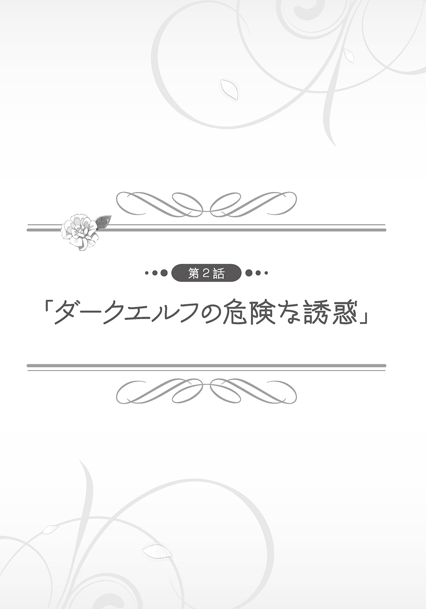
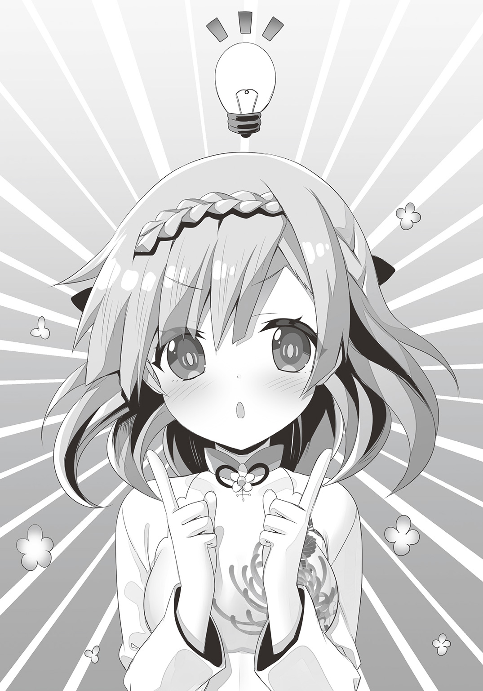

| 最強の種族が人間だった件 4 エルフ嫁と始める新婚ライフ | |
| 柑橘ゆすら | |
この本は縦書きでレイアウトされています。
また、ご覧になる機種により、表示の差が認められることがあります。
 ダッシュエックス文庫DIGITAL
ダッシュエックス文庫DIGITAL
最強の種族が人間だった件４
エルフ嫁と始める新婚ライフ
柑橘ゆすら
異世界に召喚されてから、どれくらいの月日が流れただろうか。
俺こと雨崎葉司は、たくさんの美少女たちに囲まれながら充実した異世界ライフを満喫していた。
「主さま。部屋に残した荷物などはありませんか？」
大きな麻袋を抱えながら右隣を歩く少女の名前はリア。
モデルのようにスラリと伸びた手足と凶悪な胸サイズを併せ持ったエルフの美少女である。
何かに付けて有能なリアには、異世界生活のサポートをしてもらっている。
「大丈夫。来る前に一度確認しておいたから」
俺たちが何をやっているのかというと『引っ越し』の準備である。
俺たちの住んでいるアジトは一万年前に滅んだはずの人族が残したものであり、階層ごとに様々な施設が存在している。
つい先日、発見されたばかりの《ターミナルエリア》にはなんとビックリ、一度訪れたことのある場所ならば一瞬で移動できてしまう便利な装置が置かれていた。
そういう事情もあって俺たちは生活の拠点を第二階層《グルメエリア》から第三階層《ターミナルエリア》に移すことを決めていたのである。
「......ヨージ。荷物、少なくない？」
大きな麻袋を抱えながら俺の左隣を歩く少女の名前はカノン。
魔族の中でも優れた戦闘能力を持った『吸血鬼』の美少女である。
リアとは対照的に幼い体付きをしたカノンは、色々と訳あって俺たちと同居生活を送るようになっていた。
「まぁな。こういうのは男女の差が出るんだろうな」
カノンが抱えている荷物量はリアのものと比べても遜色のないものだった。
年齢的には中学生くらいにしか見えないが、内面は既に大人の女性に近づいているんだろう。
「大丈夫か？ 半分持つぞ」
思っていたよりも大分軽い。
どうやら俺が手に取った袋は衣類が中心に詰め込まれているものだったらしい。
「ん。ありがと。ヨージ」
三人で横並びになって目的地である第三階層を目指す。
こういう取り立てて語ることのない日常が好きだった。
リアも、カノンも、普通に地球で生活をしていたら絶対に縁を持つことのできなかったであろう美少女である。
そんな女の子に囲まれて暮らすことは、ブラック企業に勤めて心身を壊しそうになっていた頃の俺にとっては、考えられないような幸せなシチュエーションである。
「......あれ。なんだろう？」
第三階層に続く階段に到着した直後だった。
アジトの中の壁からキラリと光が差し込んだような気がした。
「どうなされました？」
「今、あそこの壁が少しだけ光っていなかったか？」
「......申し訳ありません。私には気付くことができませんでした。カノンはどうでしたか？」
「リアと同じ。別のところ見てた」
気になるな。
このアジトを造ったキャシーという人物はかなりの変わり者で、建物の中に色々な仕掛けを作っているからな。
あの壁に関しても何か秘密が隠されている可能性は十分にある。
「ちょっと待っていてくれ。調べてみるから」
荷物を置いて、光ったはずの壁に手を伸ばしてみる。
スルリ。
俺の腕は何事もなかったかのように壁の中を通り抜けていく。
どうやら壁の奥は空洞になっており、中には部屋が隠されているようだった。
「......幻影魔法の一種でしょうか。恥ずかしながら私には全く見破ることが出来ませんでした」
「不思議。壁があるのに普通に通り抜けられる」
これは面白くなってきた。
奥の部屋には一体何が隠されているのだろうか。
魔法を使ってまでキャシーが隠そうとしていたことを考えると、何かとてつもなく重要なものが部屋の奥に眠っているような気がしてならない。
ウィーン、ガシャ。
ウィーン、ガシャ。ウィーン、ガシャ。
部屋の中に入った俺たちを出迎えたのは聞きなれない機械の駆動音だった。
メタリックな色合いをした横長の機械は、次々と白色の物体を吐き出しているようだった。
「これは一体......」
試しに床の上に落ちた白色の物体を拾ってみる。
う～ん。見たところ何の変哲もない紙切れのようだけど......。
これといって何かが印刷されているわけでもないペラペラの白い紙である。
「......お、驚きました！」
「これは凄い。世紀の大発見」
完全にガッカリな感想を抱いた俺とは対照的なリアクションを見せてくれたのはリア＆カノンである。
「紙が白い。真っ白」
「これほどまでに見事な品質の紙は見たことがありません！」
あ～。なるほど。
そう言えば以前にリアから見せてもらったアジト周辺の地図も羊皮紙を使っていたっけな。
現代日本で暮らしていた俺にとっては紙が白いことは当然のことなのだけど、異世界で暮らす人たちにとっては驚くべきことだったらしい。
～～～～～～～～～～
それから。
俺たちは部屋の中にあった機械を徹底的に調べることにした。
どうやら部屋の中に置かれていた機械は、単純な製紙機能の他にも印刷機能も兼ね備えていたらしい。
試しにオストラの森周辺の地図を印刷してみると、リア＆カノンは目を丸くして驚いているようであった。
「このような高度な機械を一瞬で操作できてしまうなんて......！ いつもながら......主さまの技術力には感服するばかりです」
「ヨージ。パナい。格好いい......！」
お前たちは昭和の時代に生まれたおばあちゃんかよ。
現代日本に生まれた若者ならばコピー機の使い方くらい誰でも知っているものである。
前にも思ったのだが、この世界の住人たちは電子機器の類に対して過剰に苦手意識を抱いているらしい。
「この機械が一般化すればアーテルフィアの文明レベルは、一〇〇年......いいえ、それ以上に進むものと思われます」
「一〇〇年って......。流石にそれは話を盛り過ぎなんじゃないか？」
「いいえ。紙の普及というのは、即ち技術の普及、と同義です。どんなに優れた技術が存在していても、後世に伝わらないのであれば文明の発展はありえませんから」
なるほど。
俺にとっては印刷技術なんて生まれた時から当然のように存在していたものだったからその有り難みに気付くことができなかった。
冷静になって考えてみると、印刷技術が世界に与える影響って凄まじいものがあるんだな。
「主さま。この機械をどのように使いましょうか？ 私としてはやはり、主さまの偉大さを綴った書物を大量に発行して世界中の人類に届けるべきだと思います！ そうですね。主さまに関する記述をするのですから、ただの『書物』と表現するのは不適切です。この書物は特別に『聖書』と呼ぶことにしましょう！」
怖い！ 怖いよ！
こういうことを冗談ではなく素で言ってしまうところがリアの恐ろしいところである。
単に俺はこの世界では珍しい『人間』というだけで、後世に残すような偉業は何一つとして達成していないからな!?
「いや。普通に本とかを作っても退屈だろう。実を言うと......もっと良い考えがあるんだ」
このアイデアは異世界に召喚してから間もなくして俺がずっと夢見ていたものであった。
恵まれた生活環境。可愛い女の子たち。美味しい料理。
一見すると全てにおいて充実した毎日を送っていたはずの俺であったが、一つだけ欠けていたものがあった。
「俺はこの機械を使ってマンガを普及させようと思う」
そう。それはフィクションの世界に浸る時間である。
マンガとかアニメみたいな娯楽というのは、現代日本で生活していた俺にとっては数少ない趣味の一つであった。
これらの趣味は異世界に召喚された時点で諦めなければならないと思っていたが、今回の部屋の発見で少しだけ希望が見えてきたような気がする。
「マ、マンガ......？ それは一体どのようなものなのでしょうか？」
「ん。聞きなれない言葉」
おそらく初めて聞くであろう不思議ワードを耳にしたリア＆カノンは、小首を傾げるのであった。
～～～～～～～～～～
異世界にマンガ文化を普及させると決めてからの俺は素早かった。
何はともあれ必要なのはマンガを作るために必要な紙とペンである。
熊人族の村から必要素材を調達した俺は、まわりの女の子たちにマンガという概念を教えて回ることにした。
「良いか？ カノン。マンガっていうのは、紙の中に自分の好きなように世界を創るものなんだ」
「......自分の、世界？」
「ああ。この原稿用紙の前ではカノンが神様なんだ。だから自分の好きなように自由に世界を創ってくれ」
もともと俺の周囲の女の子たちは全体的にスペックが高かったのだろうな。
我ながらぎこちない説明な気はしたが、俺の説明を受けた女の子たちはすんなりとマンガの説明を理解してくれた。
「主さま。主さまの言う『コマ割り』とは、こんな感じでよろしいでしょうか!?」
「すごっ！ なんだよ!? これ！ 激ウマじゃん！」
もしかしてこの男キャラは俺をモチーフにしたのだろうか。
適度にデフォルメされたキャラクターのイラストは端的に言って非常にマンガっぽい。
実物よりもイケメンに描きすぎているという部分くらいにしか問題点が見つからなかった。
「リアは何でも出来るんだな。何処かで絵を習っていたのか？」
「いいえ。そのような大袈裟なものではありませんよ。ただ、騎士団に入る以前......王都の路上で似顔絵を売って生計を立てていた時代があったのです」
「マ、マジかよ......」
習っていたどころの話ではない。
どうやらリアの画力は、既にプロとしてメシを食っていけるレベルに達していたようであった。
「主さま。提案がございます。せっかくこのようなマンガという素晴らしい文化に出会えたのです。何かの機会でお披露目会のようなものを開いてみてはいかがでしょうか？」
「そうだな。実力を試す大会のようなものが必要か」
「大会!? それって私も参加できるの!?」
「もちろん。カノンの描いたマンガを楽しみにしているよ」
せっかくだからアジトを出入りする女の子たちだけではなく、外の世界に出て様々な才能を発掘していきたい。
今この瞬間『人間軍主催 第一回新人マンガコンテスト』の開催が決定したのであった。
～～～～～～～～～～
それから更に二週間後。
ついにやってきたコンテストの当日。
俺の呼びかけに応じてコンテストに参加してくれたのは、お馴染み人間軍のメンバー＆熊人族の村の住人たちであった。
「いや～。正直こういうイベントを開催してくれるのは助かるよ。村の人間たちはとにかく娯楽に飢えていたからね」
熊人族の村の村長、アダイは屈託のない笑顔を浮かべながらテーブルの上のキャンディを口の中に放り込んだ。
「ところでヨウジさま。今日のコンテストの大賞の特典なのだが、本当にどんなお願いでも良いのだろうか？」
「ああ。実現性に乏しいものは断るかもしれないけど、出来る限りのことはしようと思っているよ」
コンテストの参加賞として《グルメエリア》で作成した『キャンディ詰め合わせ一カ月』を用意したのだが、流石にそれだけだと参加者のモチベーションを上げることが難しいかもしれない。
そう考えた俺はコンテストの大賞特典として別途『人間軍総帥の俺にお願いを一つだけ聞いてもらえる権利』を設定することにした。
「ふふ。ふふふふふ。主さまに好きなお願い......ふふふ。ふふふふふふ」
ぬおっ！ お前は一体いつからそこにいたんだよ!?
振り返って見ると、眼の下に大きなクマをつくったリアが薄気味の悪い笑い声を漏らした。
「......もしかして寝てないのか？」
「ええ。今日に備えて三日前から徹夜で原稿のブラッシュアップを押し進めて参りましたから。けれでも、大丈夫です。この原稿があれば、大賞の特典は既に私の手中に収めたのも同義ですから」
一体何が大丈夫なのか全く分からないぞ......。
迂闊だった。
よくよく考えてみると今回の大賞特典は、特定の人物に対して危険水準のモチベーションを与えてしまうものだったのかもしれない。
「ふふふ。リアは何も分かっていない。マンガに大切なのは画力ではなくネームのセンス。絵が上手ければ天下を取れると考えるのは浅はかな考え」
「カノンも凄い自信だな」
「期待していて。今日用意してきた私のマンガは誰も思いつかなかった斬新なアイデアを使っているから」
「............」
本当に期待しても大丈夫なのか？
作家志望者の言う『誰も思いつかなかった斬新なアイデア』というのは大抵の場合、先人たちが思いついてもあえて避けてきたアイデアだったりするものなのだが......。
物作りに携わる人間ならば誰しもが一度はハマるような落とし穴に、ズッポリとハマっていそうな雰囲気が漂っていて不安である。
こうして――。
それぞれが様々な想いを胸に秘めたままコンテストはスタートする。
「じゃじゃーん！ 見て下さい！ これがアタシの描いてきたマンガです！」
トップバッターはミレアちゃん。
アダイの妹であるミレアちゃんは中学三年生くらいの年齢なのだが、趣味がオシャレということもあって垢抜けた雰囲気を持っている。
ミレアちゃんが持ってきたマンガの表紙には、『熊空』というタイトルが書かれていた。
「えへへ。どうですかー？ 私的には結構な自信作なんですけど」
思っていたより絵は上手い。
もともと服作りをしていて器用だったこともあり十分に及第点を与えることができるレベルである。
しかし、内容はというと、爽やかなタイトルからは想像できないようなドロドロとした愛憎劇であった。
主人公が不治の病にかかったり、恋のライバルであるエルフの女の子がオークに暴力を振るわれる展開は賛否の分かれそうなところであった。
「ちなみに登場人物は、私とヨージさんをモデルにしてみました！」
「そ、そうなんだ......」
なんというか......世が世ならば一世を風靡していたかもしれないポテンシャルを感じはするのだが、いかんせん男の俺が楽しんで読むにはハードルが高い。
男には決して理解できない女の子の世界がそこにあった。
「ヨージ。次、私の番」
続いて俺の前に原稿を提出したのはカノンであった。
カノンが持ってきたマンガの表紙には『孤高無窮の吸血鬼』というタイトルが記されていた。
「これは......！」
「タイトルには自信ある。文字の上にルビを振ると、なんかオシャレに見える」
そこに気付くとは......！
内容の方はというと幼い頃に両親に捨てられて孤独に生きる一人の吸血鬼少女が、戦いの日々に明け暮れながら自分の居場所を探していく、というストーリーになっていた。
画力は粗削りに感じるが、一貫した中二病設定が読んでいて心地好い。
もしかしたらカノンには中二病マンガを描く才能があるのかもしれない。
「凄いよ。カノン。これ、全部自分で考えたんだよな」
「ん。ヨージが自由に自分の世界を描いて良い、って言っていたから」
ページを捲る手が止まらない。
戦いに次ぐ戦いの果てに吸血鬼の少女は一人の男子と出会う。
その男子は最強の種族『人間』の生き残りで、可憐に戦う吸血鬼の少女に一目惚れをしてしまう。
......。
............。
この、モデルとなっている人族の男子って明らかに俺だよな？
「カノン......。これって......」
「ヨージが自分の世界を描いて良い、って言っていたから」
やがて恋人の関係になった吸血鬼＆人間は、人里離れた森の中の家で、互いに体を重ねて、気持ちを確かめ合う展開に。
ちょっと待て。
せっかく良い雰囲気の中二バトルが展開されていたのに、いきなり18禁マンガになっているんですけど!?
好きに描いて良いとは言ったけど、まさかここまで露骨にモデルにされるとは思わなかった。
現実を忘れて物語の中に没頭できる、というのがマンガの魅力なのだから、現実を匂わすような設定は省いてほしかったぜ。
「主さま。いよいよ次は私の番ですね」
次に原稿を提出したのはリアであった。
マンガの表紙には『禁断の恋～最強種族、人族の男性に恋をして～』というタイトルが記されていた。
何故、劇画タッチ!?
表紙に描かれた一組の男女のイラストは画力が高すぎて一目見ただけで、俺とリアをモデルにした物語だということは分かった。
「如何でしょうか？ 私と主さまのラブロマンスを一〇〇ページに渡る長編マンガとしてしたためてみました」
ええっ。いくらなんでも気合が入り過ぎだろう！
準備期間はたったの二週間しかなかったのに一〇〇ページ超えとか......本職のマンガ家さんすら凌駕する生産スピードである。
内容の方はというと、骨太なストーリーに、緻密な構成、プロ顔負けの画力が合わさって、リアが自信を持って勧めるのも分かる文句なしの超大作であった。
けれども、何故だろう。
俺としてはリアのマンガはそこまで面白いとは思えなかった。
個人的に『俺をモデルにしたマンガ』に飽き飽きしていたというのもあるのだけど、なんというか......読んでいて非常にドッと疲れる内容なんだよな。
こういうタイプの、力作ではあるんだけど、いまひとつ楽しめない作品というのは前の世界でも時々見かけたような気がする。
～～～～～～～～～～
その後の俺はコンテスト参加者のマンガを次々に読破していった。
けれども、参加者の大半が、参加賞のキャンディを目当てにした子供たちだったこともあり、ネタとして楽しむことはできても、純粋に作品として面白いと思えるようなマンガを見つけることは出来なかった。
「......参加作品はこれで全部か」
画力に絞った評価ならば リア ＞ ミレアちゃん ＞ カノン といった感じなのだが、ストーリーの面白さで言うのであれば リア ＜ ミレアちゃん ＜ カノン という具合に順番が完全に逆転する。
う～ん。誰に大賞を与えるか悩みどころだな。
総合的な評価としてはそれぞれ横並びになって甲乙つけ難い。
「いや。まだ一人残っているぜ。ヨウジさま。オレが描いてきたマンガも見てくれよ」
最後に原稿を提出してきたのはアダイであった。
「は？ 兄貴も描いてきたの？ 村長としての仕事が忙しいとか言っていなかったっけ」
「......うぐっ。まぁ、いいじゃねーかよ。兄ちゃんだって、たまには息抜きがしたいんだって」
ミレアちゃんからの非難を浴びたアダイは申し訳なさそうに肩をすくめる。
相も変わらず兄に対するミレアちゃんの当たりは強かった。
こう言っちゃ悪いのだが、アダイのマンガにはあまり期待はしていなかった。
何かにつけて不器用なアダイに面白いマンガを作れるはずがない、とページを開くまでの俺はそんなことを考えていた。
「こ、これは......!?」
けれども、俺の予想は開始早々に崩れ去ることになった。
アダイの作品、『俺が反抗期の妹に恋するはずがない！』は平凡な兄と美しい妹の二人を描いたラブコメであった。
一回り歳の離れた実の妹に対する愛情と、決して越えられない血縁関係という壁の間に揺れ動く主人公の心情は、読んでいて凄く共感できるものがあった。
技術的にはまだまだ粗削りだが、それを補って有り余る『妹萌え』に対する熱量があった。
「お前、天才だよ！」
これは絶対に人気出る！ お金になるやつだ！
予期せぬ才能を発掘した俺は、声高に叫ぶのであった。

波乱のコンテストが幕を下ろし、いつもと変わらない日常が戻ってきた。
俺はというと相も変わらず特に何か目的を持つわけでもなく日常を謳歌していた。
「主さま。お湯加減は如何でしょうか？」
「ヨージ、どう？ 気持ち良い？」
現在、俺が何をしているのかというと女の子たちと朝から風呂に入っている。
どうして朝から風呂？ と疑問に思うかもしれないが、この朝風呂というのが重要なのだと俺は思う。
夜に風呂に入ることは、仕事に追われるサラリーマンにだって出来るからな。
朝からゆっくりと風呂に入ることが出来るのは、俺のような自由人の特権なのである。
「後ろの方は終わりましたので、次は前の方を洗いますね」
リアの合図を受けた俺はマットの上でゴロンと仰向けになる。
たっぷり泡を含んだ女の子たちの手が俺の体を弄り、浴室は爽やかな石鹼の香りに包まれていく。
我ながら自堕落だとは思うが、俺はもはや『自分で体を洗う』という行為を久しくやっていない。
マットの上で寝ているだけで自動的に体を洗ってもらえるのである。
「はぁ～。極楽だぁ～」
目の前には一糸纏わない姿の二人の美少女がいて、彼女たちは献身的に俺の体を洗ってくれている。
これ以上に贅沢なイベントが人生においてあるだろうか？
たとえるならそれは――高級和牛の上にイクラをのせて食べるかのような背徳感がある。
「なんだ。ヨージ。こんなところにいたのか」
俺が心地の好い微睡の中に落ちようとした直後だった。
頭の方角から女性の声。
何事かと思いマットから体を起こすと、そこにいたのは俺にとって見知った顔であった。
「セ、セラ......!?」
そこにいたのはダークエルフの美女にして、王都の騎士団では三番隊の隊長を務めるセラの姿であった。
胸はでかい。
推定Ｆカップのリアすらも凌駕しており、俺の知り合いの中ではセラのサイズに対抗できるのはロゼッタくらいのものだと思う。
褐色肌の裸体をあけっぴろげに露わにするセラの姿は、率直に言って非常にエロいものがあった。
「セラ！ 今すぐに主さまの元から離れなさい！」
最初に声を上げたのはリアだった。
リアとセラ。
同じ師匠のもとで魔術の基礎を学んで、騎士団に入ることになった二人には様々な因縁があるらしい。
実を言うとセラが俺たちのアジトに侵入してきたのは過去にも何度かあった。
対策を練ろうにも、オール率いるゴブリン部隊、ヤン率いるウルフ部隊ではセラを捕らえることは困難だった。
唯一、良い勝負が出来そうだったライムも次第にセラに軽くあしらわれるようになってしまい――。
今となってはアジトの中で、セラの侵入を止められるものはいなくなってしまったのである。
「まぁまぁ。硬いこと言うなって。妹弟子よ。何もオレは、今日明日にヨージのことを殺そうと考えているわけではないんだからよ」
肉付きの良い体に騙されて油断してはならない。
騎士団からセラに与えられた仕事は人族である俺の抹殺であった。
頭のキレるセラは『人間である俺を殺すには人間の力を利用するしかない』という真理に辿りついて、時間を見つけてはアジトに入り浸るようになっていたのである。
「今日のオレは久しぶりのオフなんだ。久しぶりに家の温泉を楽しませてくれよ」
セラは欠伸を嚙み殺したような声を上げるとマットの上に腰を下ろす。
ごくり......。
プリプリとした褐色の尻を前にした俺は思わず唾を飲み込んでしまう。
「ところで、それ。お前たち、何しているんだ？」
「なにって......主さまの背中をお流ししているのですよ。こうやって主さまの体を洗い流すことが我々の使命なのです」
「ふ～ん。つまりはご主人さまに対するご奉仕っていうわけだ。それにしちゃ温いことやっているなぁ」
「なっ。それは一体どういう意味ですか!?」
「ん？ 言葉通りの意味に受け取ってもらって構わないが。オレの手にかかればヨージのことをもっと喜ばせることが出来ると言っているんだ」
極めて挑発的な口調でセラは笑う。
浴場の中に険悪な雰囲気が流れるのが分かった。
「き、聞き捨てなりません！ 訂正して下さい！」
「リアの言う通り。そこまで自信を持って言うならば実際にやってみせてほしい」
二人が怒るのも当然である。
リア＆カノンの献身的な奉仕は一〇〇点満点中一二〇点をあげても良いくらいのクオリティだと思う。
流石のセラもこれ以上に丁寧な仕事は出来ないだろう。
「ククク。ならば物は試しにやってみようか。リア。オレに石鹼を貸せ」
リアが俺の許可を求めるように目配せしてきたので黙って首を縦に振る。
危険だということは分かっているが、セラがどのような方法で俺の体を洗ってくれるのか？ という部分に純粋に興味が湧いてきたのである。
「――良いでしょう。その代わり、もしも私たちが勝った場合、二度とアジトの敷居を跨がないと誓って下さい」
「分かった。けれども、仮にオレの方がヨージのことを喜ばせることが出来た場合、今日も一時間ほどヨージの唇を借りていくからな」
しまった！ セラの狙いは初めからそこにあったのか！
先ほども言った通りセラの目的は人間を倒すために人間の力を得ることである。
こういうことは過去にも何度かあった。
セラは何かにつけて俺から聖遺物を奪うタイミングを窺っているのである。
「ヨージ。さっそく始めるぞ」
次にセラの取った行動は予想外過ぎるものだった。
何を思ったのかセラは――手にした石鹼を使って自分の体を洗い始めたのである。
「......やはりダメですね。主さまの体を洗うどころか自分の体を洗い始めるなんて......笑止千万です」
「黙っていろ。生娘。これからオレが男の喜ばせ方というものを見せてやろう」
なんだろう。この違和感。
普通に体を洗うにしては洗う場所がやけに偏っているような気がするんだよな。
具体的に言うと、やけにお尻の方にばかり入念に泡を塗りたくっているような感じがする。
「ここからが本番だ」
な、なんだこれは......。セラのお尻が急に目の前に......。
いきなり視界が暗くなってしまったぞ!?
むぎゅぎゅうううううううううううううううううううううううううううううううううううううううううううううううっ。
突如として柔らかい物体が俺の顔面を圧迫した。
「ククク。どうだ？ ヨージ。女の尻で顔を洗われている気分は」
「ふ、ふがぁ......！ ふがぁ......！」
さながらそれは顔面洗浄プレイといったところだろうか。
石鹼の泡に塗れたセラの尻が俺の顔面をゴシゴシと擦っていく。
こ、この人と一緒にいると危険だ。
俺を取り巻く環境が完全にＲ18になってしまう！
何が一番まずいかって、女の尻にしかれて、乱暴に扱われて、けれども、そんなに嫌な気分じゃないことだ！
「んん？ もっと激しいのがお好みだったっか？」
苦しい。石鹼が鼻の穴の中に入ってムズムズする。
もう何も考えられない。
頭がバカになってしまいそうだ。
肉厚の褐色尻に顔面を圧迫された俺は、目覚めてはならない性癖を開花させそうになっていた。
「セラ！ 今すぐ主さまから離れなさい！ これ以上の無礼は許しませんよ！」
「ん？ オレはヨージを喜ばせるためにこうしているのだが」
「何を言いますか！ 主さまは誰よりも聡明なお方！ 女の尻に顔面を圧迫されて、喜ぶはずがありません！」
「リアの言う通り。流石のヨージもそこまで変態ではないはず」
何故だろう。
一片の疑いもなく俺のことを信じてくれる二人の言葉がなんだか今は心苦しい。
「ふふ。噓だと思うならタオルを取ってソイツの下半身を確認してみるんだな。まぁ、結果は見るまでもないことだとは思うが」
あくまで余裕の振る舞いを崩さずにセラは言った。
見るなぁぁぁああああ！
今このタイミングでタオルを外されたら俺は......。
「あ、主さま......？」
「ヨージ。流石にそれはどうかと思う......」
終わったー。
俺の人生に終了のホイッスルが鳴り響いたー。
この状況......言葉で否定したところで無意味である。
勝負の決着は何より俺の体が雄弁に語ってしまっていた。
「ふふふふ。約束通りこれから一時間、ヨージはオレのものだ。さぁ、分かったら負け犬たちは立ち去るこったな」
一つだけ俺に言い訳させてほしい。
こういう状況になってからでは既に説得力がないかもしれないが、以前までの俺は、決してＭ寄りの性癖を持っているわけではなかった。
けれども、異世界に召喚されて、女の子たちから無条件に優しくされていく中で、心の何処かで『雑に扱われる』ことに対して飢餓感を覚えていたのだろう。
だから......だから......これは不可抗力なんだ。
断じて俺は......女の尻で顔面を圧迫されて喜ぶような変態ではないはずだ......。
リア＆カノンから降り注ぐ軽蔑の眼差しを一身に浴びながら俺は、現実逃避を兼ねてそんな分析をするのだった。
～～～～～～～～～～
風呂の一件からリアの機嫌が悪い。
思い返してみると、リアと暮らし始めてからもう随分と時間が経つのだけど、こんなことは初めてだった。
「なぁ。リア。今日の予定のことなんだけど......」
「............」
今だってそうだ。
俺が声をかけても無視をされて、あからさまに『ツン』とした態度を取られてしまう。
これまでは俺がどんな醜態を晒しても『主さま！』と言って慕ってくれたリアが......まさか俺の言葉を無視するような日がくるなんて......。
そうだよな。
慕っていた相手が、敵軍の女幹部の尻に顔面を圧迫されて喜ぶようなド変態だったら、誰だって幻滅するよな。
ぐっ。うぐぅぅぅ。
どうすれば俺はここから名誉を挽回することが出来るのだろうか。
「あのっ。マスター。何か悩み事ですか？」
机に座りながら頭を抱えて悩んでいると一人のゴーレムが声をかけてくる。
彼女の名前はミスズ。
第三階層《ターミナルエリア》を守護するゴーレムである。
アジトを守護するゴーレムたちは、それぞれ世界各国の民族衣装を身に着けているという特徴がある。
ミスズの場合はベトナムの民族衣装であるアオザイだった。
体のラインがハッキリと分かる白色のアオザイは、清純な印象を醸しながらエロいということで世の男性たちから支持を得ているらしい。
「......色々あってリアと険悪な雰囲気なんだ。なぁ。ミスズ。どうすれば俺はリアと仲直りすることが出来ると思う？」
「ああ。そういう事情でしたらリアさんと二人で旅行に行かれては如何でしょうか？」
他のゴーレムと比べて少し幼さが残る声音でミスズは言った。
「......旅行。その手があったか」
「はい。こういう時はパーっとリアさんと二人でバカンスに出かけてみましょう。帰ってきた頃にはきっと仲直りできているはずですよ」
完全に盲点だった。
これまで俺はリアと二人で旅行に出かけたことはなかった。
過去に一度だけ王都に出かけたのが最後で、外に連れ立ってデートをしようなんて発想は一度たりとも出てこなかったのである。
「良いアイデアだとは思うけど......。俺がアジトから消えても大丈夫なのか？」
一つだけ大きな懸念点がある。
自分でも眉唾ものの話だとは思っているのだが、このアジトの動力源の大部分は人間である俺の体から漏れ出した魔力エネルギーによって賄われているらしい。
そういう事情もあって俺が長時間アジトを空けると、防衛力が激減して大変なことになるのだとか。
「へへぇ。そういうことでしたら問題ありませんよ。お忘れですか？ ここは第三階層《ターミナルエリア》。その気になれば世界の裏側にだって日帰りで行けちゃうのですよ」
「......そうか！ そうだよな！」
俺には人族が残したチート装置が味方に付いているんだった。

よーし。
そうと決まれば善は急げ。
さっそくリアを満足させることのできる旅行プランを作ってやろう。
覚悟を決めた俺はミスズのアドバイスに従いながら、最強の旅行計画を練り上げるのであった。
～～～～～～～～～～
「か、完成だ......！」
それから数日後。
俺が考えに考え抜いて作成した旅行プランは以下のようなものである。
名付けて！ 日帰りで回る世界三大観光名所！
熊人族の村から取り寄せたパンフレットによると、アーテルフィア最大の大陸であるスフィートル大陸には全世界で有名な観光スポットが三つ存在しているらしい。
一つ目は世界樹。
東に存在する世界樹は、高さが一万メートルにも達すると言われている世界最大の大樹である。
豊かな自然に囲まれたこのエリアは、若いカップルに人気のデートスポットにもなっているのだとか。
二つ目はエインヘイルの石像。
南の草原に存在するエインヘイルの石像は、誰が作ったのか不明でずっとこの世界の謎となっているらしい。
ミステリアスな石像が集うこのエリアは、熟練の老夫婦を筆頭に、マニアに人気を誇っているとのこと。
三つ目はヒューノットの遺跡。
西に存在するヒューノットの遺跡は、人族が残した世界最大の遺跡と呼ばれており、未だに学者たちが集まって様々な研究を進めている。
人族に対するリスペクトが強いリアならば絶対に興味を惹く観光スポットに違いない。
さてさて。
俺に残された問題は『どうやって観光スポットまでワープするか？』ということである。
《ターミナルエリア》に設置されているワープ装置の唯一のデメリットは、『一度行ったことのある場所にしか移動できない』ということであった。
例外として、知り合いの顔を思い浮かべることで、その知り合いがいる場所にまでワープすることは出来るのだが、当然のことながら俺には目的地である三つの場所に住んでいる知り合いはいない。
「――お困りのようだな」
「セラッ!? いつの間に!?」
振り返ってみると、そこにいたのは、テーブルの上に腰かけながら長い足を放り投げたセラの姿だった。
「ふむふむ。『世界樹』・『エインヘイルの石像』・『ヒューノットの遺跡』か。懐かしいぜ。オレがまだ騎士団に入って間もない頃、使いっぱしりで調査に向かわされたっけな」
「......何が言いたい？」
「オレを使えよ。大方、リアのやつの機嫌を取るために旅行プランを練っているんだろ？ 報酬はいつものように唇レンタル一時間で良い。オレがいれば世界各地の大抵の場所まで飛んでいけるぜ」
「............」
まったくもって......恐ろしい人である。
セラの前では俺の考えていることなど筒抜けというわけか。
「素朴な疑問なんだけど、どうしてセラがワープ装置の仕様を知っているんだよ？」
「なんだよ。今更。オレがどんだけこのアジトに出入りしていると思っているんだ？ ワープ装置だけではないぜ。今となってはこのアジトの設備に関してオレ以上の知識を持っているやつなんていないだろうよ。今はアジト最大の謎であるメイン動力源の謎を調査中だ」
「勝手に調査しないで下さい!!」
相変わらずにフリーダムな人である。
おそらく面白いものに目がないセラにとって、俺たちのアジトは玩具箱も同然の存在なのだろう。
「セラ！ 逃がしませんよ！」
勢い良く扉の開く音。
肩で息をしながら部屋の中に駆け込んできたのはリアであった。
「あっ。あ、主さま...」
「お、おう」
俺たちの間には気まずい沈黙が流れていた。
あの時の風呂の一件以来、未だにリアとはキチンと喋れていない。
かろうじて交わした言葉は業務上のものだけであった。
「セラ！ 今すぐそこを離れなさい！ 今日という今日は、主さまに酷いことをすると容赦しませんよ！」
「なんだよ。藪から棒に。酷いことをしているのはリア。お前の方じゃねーか」
「......どういう意味ですか？」
「泣かせるぜ。この男、お前のご機嫌を取るために旅行の計画を練っていたらしい」
「えっ......？」
セラの発言を受けたリアは、最初驚いたかのような表情を浮かべると徐々に表情を青白くしていく。
「ヨージ。真面目にアドバイスをしておく。お前たちは一度よ～っく互いに腹を割って話した方が良い。安心しろよ。リアは別にお前のことを嫌っていないから」
意味深な言葉を残したセラは俺の肩をポンと叩くと、そのまま部屋を後にする。
これは一体どういうことだろう。
セラの口にした言葉が真実であるのならば今日までのリアの態度とは矛盾する。
俺としてはリアの態度が変わったのは、間違いなく浴場での変態疑惑が原因だと思っていたのだが......。
「セラの言う通りです！ 私は主さまのことを嫌ってなどおりません！ 初めて出会ったその日から......私にとって主さまはこの世界の全てです！ 他の何よりも主さまの存在を尊く思っております！」
「ならどうして......」
「申し訳ございません。もしかしたら私、取り返しのつかない間違いを犯していたのでしょうか？ てっきり、私、主さまは女性から冷たくされるのが好きなのだと思って、気を利かせていたつもりだったのですが......」
「............」
あまりの衝撃発言に開いた口が塞がらない。
リアよ。
お前は俺のこと女の子に冷たくされて喜ぶド変態だと思っていたのかよ......!?
なんだろう。この微妙な気持ち。
誤解が解けたのは良いのだが、変態疑惑をかけられていたという部分は真実だっただけに、素直に喜ぶことが出来ないぞ......。
～～～～～～～～～～
一方、その頃。
ここは王都ミズガルドの中でもひときわ治安の悪い《スラム》と呼ばれる地域である。
ガリガリに瘦せ細ったストリートチルドレン。
麻薬によるトリップで、呆けた表情で地面で寝転がっている中年男。
薄汚れた服を身に纏った売春婦。
《スラム》の中は王都でも選りすぐりのならず者たちが集うことで知られていた。
《スラム》の中は常に動物の腐った臭いが立ち込めている。
この場所で野垂れ死んだ人間がいたとしてもそれらを片づける者はいない。
彼らの亡骸は野犬の餌になり、残った骨は土に還るまで放置されることになる。
「クソッ！ また失敗だっ！」
そんな《スラム》の建物の中に魔族の中でも聖遺物の研究の第一人者として知られる仮面の男――グレイスのアジトはあった。
グレイスは苛立ちながらテーブルの上に置かれたフラスコを払いのける。
ガラスケースの中の実験用のネズミたちは、後遺症により頭を膨張させたまま絶命していた。
「何故だ！ 私の作ったサンプルは完璧だったはずだ！ 一パーセントの狂いもなく人族の細胞を再現している。はずなのに......」
グレイスの作成した聖遺物は短期的には、本物の聖遺物すらも凌駕する力を獲得することを可能にしているのだが、使用者は深刻な後遺症に苛まれることになる。
何度実験を繰り返しても結果は同じだった。
人族の細胞を完璧に再現しているはずなのに『何か』が足りない。
けれども、グレイスにはその『何か』の正体を特定することが出来なかった。
「――困っているみたいね」
背後から女性の声。振り返ると、そこにいたのは黒のローブに身を包んだ一人の女性の姿だった。
「アリサ......。何の用だ......」
この世界にアリサのように里を抜け出して独立した『はぐれ』の魔族はそう多くない。
特別に馬が合うというわけではないのだが、同じ『はぐれ』の魔族同士、グレイスとアリサは定期的に連絡を交わす間柄だった。
「いやー。偶然、王都を通りかかる機会があったもんだから何をしているのかなーって。どうせ貴方のことだからロクでもない研究をしていることは確かなのでしょうけど」
「冷やかしで来ているならば、今すぐに引き返せ。悪いが、私には貴様に構っていられる時間など一秒たりとも存在していないのだ」
こうしている間にもオストラの森に拠点を置く葉司たちは、着実にアジトの防衛を強化している。
葉司が力を付けてしまうと、完璧な聖遺物のサンプルを入手するチャンスが減り、グレイスの悲願が少しずつ遠のいていくのである。
「ねぇ。グレイス。貴方の最終的な目的ってラグナロクを動かすことにあるんでしょ？」
「......だから、何だと言うのだ」
ラグナロク。
それはかつて地上にいた人族を絶滅に追いやったとされる伝説の古代兵器である。
現在、ラグナロクは人族の力に反応して開く扉がある、不思議な部屋の中に格納されている。
グレイスは聖遺物の力を研究することで、この扉を開いて、ラグナロクを我が物にしようと考えていたのであった。
「勘が鈍いのね。その研究、私が協力してあげよっかと言っているんだけど」
「フンッ。妹を売った落ちこぼれ魔族が。お前に一体何が出来るというのだ」
こと聖遺物に関する知識においてグレイスの右に出るものはいない。
だからグレイスは里を抜け出し、『はぐれ』となり、独自に研究を進めていたのである。
他人の力など絶対に役に立つはずがない。
そう信じて疑わなかったグレイスであったが、アリサのプランを聞いた直後に自らの考えを改める。
「なにッ!? それは本当か!? ......良いだろう。その話、乗ってやる」
どうしてこんな簡単なことに気付けなかったのだろうか。
アリサの作り出した計画は、ことラグナロクの起動という意味では、グレイスの進めている研究よりもずっと効率的に目的を達成できるものだった。
「現金な男ね。いいわ。その代わり、私の計画が上手く行ったら約束通り――貴方が作った聖遺物の中でも一番上等なのを寄越しなさいよ」
ここまでは何もかもが恐ろしいほどに上手くことが運んでいた。
背を向けたアリサは、グレイスに悟られないよう胸の中に入れた水晶のネックレスを手に取った。
（――カノン。私は認めないわ。貴方だけが幸せになるなんて絶対に許さない）
水晶の中に姿を映したカノンは、葉司の隣で寝息を立てている。
血の繫がった妹が幸せそうに寝顔を浮かべるのを目の当たりにしたアリサは、強く唇を嚙み締めていた。
「おおー。あれが世界樹か！」
それから翌日のこと。
リアと仲直りした俺は人間軍のメンバーで日帰り旅行をしていた。
「見事なものですね。話には聞いていたのですが、私も実物を見るのは初めてです」
「......パナい。さきっぽの部分が全く見えない」
もともと俺の旅行プランは『リアと仲直り』するために作ったものだから破棄しても構わなかったのだが、リアの「主さまの作った世界一素敵なものです！ それを捨てるなんてとんでもないです！」という言葉によって実施されることになった。
俺としても自分の目で観光地を確かめてみたい気持ちがあったから、結局こうして観光地を訪れているというわけである。
「知っているか。ヨージ。世界樹っていうのは人族が滅びるのと同時に生まれたものなんだぜ。世界樹の高さは現在およそ一万メートル。つまりは毎年一メートルずつ成長しているんだよ」
降り注ぐ日差しを掌で遮りながらセラは言った。
サングラスに胸元の大きく開いたシャツを身に着けたセラは、ハリウッド女優のような雰囲気を纏っている。
「......セラ。貴女の役割は此処に来るまでの道案内だけです。私たちの観光が終わるまでの間、貴女はここで待機していて下さい」
《ターミナルエリア》に設置されたワープ装置には、『一度行ったことのある場所にしか移動できない』という条件があった。
そういうわけで必然的にセラが同行することになったのだけど、リアにとっては不満の残る展開だったようである。
ちなみにアジトに帰るためにはワープ装置から出てきた切符を手に取ったまま、帰りたいと念じるだけで、元いた場所に戻ることができるらしい。
どうやら俺が以前に王都に転送されて帰れなくなった時は、切符を浴場の中に落としたまま忘れてしまったみたいである。
「まぁまぁ。リア。せっかく旅行に来たんだから皆で仲良く......」
「主さまは甘過ぎます！ その者の目的は主さまから聖遺物を奪い、主さまを殺すことにあるのですよ！」
「うっ。そ、それはそうなんだけどさ......」
言われてみれば何でなんだろうな。
もしかしたら俺はセラのことをそれほど危険に思っていないのかもしれない。
本気で殺すつもりなら、「俺を殺す」なんて自分から目的を口にしない方が有利だろうし。
都合の良い解釈になるかもしれないけど、個人的にはセラが本気で俺を殺すつもりでいるとは思えないんだよな。
「やれやれ。女のジェラシーは恐ろしいな。ヨージ。早く世界樹のところに行こうぜ。幹の方では採れたての新鮮な樹液の販売をしているからよ」
セラは子供のように無垢な笑顔を浮かべると、強引に俺の手を引いて世界樹の方に歩いていく。
けれども、リアの言う通り、用心するに越したことはないだろう。
セラに関しては何処までが演技で、何処までが本心なのか判断できない部分がある。
なんてことを考えていると、いつの間にやら俺の右腕はセラの大きな胸の間にガッチリと挟まっていた。
～～～～～～～～～～
「世界樹の樹液～！ 採れたて新鮮な世界樹の樹液は如何ですか～？」
人の集まるところに商いのチャンス有り。
世界樹の麓に到着すると、行商人たちの掛け声が飛び交っていた。
「へぇ。面白いものが売っているんだな」
世界樹の樹液っていうとロールプレイングゲームの中では定番のアイテムである。
その効果は味方の状態異常を回復したり、瀕死状態から蘇生させたりと様々だが、実際に食べるとどんな味がするのだろうか。
「......うげっ。高い」
隣を歩くカノンが唐突に苦い声を漏らす。
値札を見ると、その価格は一〇〇ミリリットルで銀貨五枚。
う～ん。普段家の中に引きこもっているせいで、この価格設定が高いのか、安いのかすら分からないぞ。
「そんなに高いのか？」
「ええ。主さまの財力を以てすれば小銭にも満たないものですが、銀貨五枚といいますと、騎士団の新人隊員の一週間分の給料といったところでしょうか」
なるほど。リアの説明で大まかなイメージが湧いた。
一カ月間、汗水たらして働いてもペットボトル一本分の世界樹の樹液も購入できないということはかなりの高級品ということだろう。
「以前に一度飲んだことがある。たしかに高いが、値段なりの価値はあると思うぜ？ 世界樹の樹液には高濃度の魔力が含まれているんだ」
そこで俺が思い出したのはアジトの中で作られているクローンクラブである。
この世界の食物というのは、単純な味の他にも魔力の保有量によっても『美味い』『不味い』が決まってくる。
保有魔力量の多い食物をとると、体がポカポカと温まり、幸せな気分になってくるんだよな。
「せっかく来たことですし、買っていきましょうか。何事も経験といいますから」
行商人との交渉を始めたリアは小さなビンを手に取り戻ってくる。
キチンとセラのも含めて四人分買ってくるあたり、リアの人柄の良さが滲み出ているような気がする。
「いただきまーす」
小さなビンのフタを外して、まずは匂いを嗅いでみる。
うげえっ。
世界樹の樹液ってこんな香りだったのか。
子供の頃に悪戯で食べたカブトムシゼリーの臭いがする。
意を決してビンの中の液体を飲み干すと、予想していたよりも数段酷い味が口の中に広がった。
仄かな甘さこそ感じはするが、それ以上に樹液特有のエグみが厳しい。
これならばまだ砂糖水でも飲んでいた方がマシだろう。
「これは......」
「う～ん......」
俺が抱いたのと同じような感想を抱いていたのだろう。
リア＆カノンは早々に世界樹の樹液を飲み干すと、互いに苦い顔を見合わせていた。
「......おかしい。以前に飲んだ時はもっと美味いと感じたはずなのに」
納得の行かない面持ちをしたセラは、ビンに口をつけて世界樹の樹液の味を確かめているようだった。
「そうか。分かったぞ」
やがて何かに気付いたセラは顔を上げる。
その表情は最初にビンに口をつけたのと同じで苦いままだった。
「どうやらオレたちはヨージから与えられている聖遺物の味に慣れ過ぎちまっているらしい。ヨージの唇の味を知っちまったら、こんなものは単なる砂糖水と一緒だな」
「......なるほど。そういうことだったのか」
この世界では人間の力に勝るものは存在していない。
一般人にとっては魔力が豊富で美味しいと感じられる世界樹の樹液だが、それ以上のものを日常的に摂取しているものにとっては特に有り難みのないものなのだろう。
「......チッ。久しぶりに酷いもんを食べちまった。こうなったからにはヨージの唇で口直しをしないとな」
「どうしてそうなる!?」
「セラ！ 離れなさい！ 主さまもお願いですから......もう少し強めに抵抗してください！」
強引に俺の唇を奪おうとするセラのことをリアは力ずくで引き止める。
「......おい。なんだよ。あのニューマン」
「理不尽だ。どうしてあんな冴えない男がモテモテなんだよ！」
これといってイケメンというわけでもないのに美女たちに囲まれた俺のことを不思議に思っているのだろう。
周りにいた観光客の男たちは俺に怪訝な視線を向けるのだった。
～～～～～～～～～～
世界樹に続いて俺たちが訪れたのは、スフィートル大陸の南のエインヘイルの石像が置かれた草原であった。
もともとこの石像は周囲が海で囲まれた島にあって、一日に三本しか出ていない船に乗るしか訪れる方法はなかったのだが、ワープ装置を使えばそんなことはお構いなしである。
セラに導かれるままに俺たちは一瞬で島の港にまでやってきた。
「......凄い。さっきまでと違っていきなり『夏』って感じだな」
南の島というだけあって日差しが強い。
周囲に生い茂る草木はやたらと背が高く異国の雰囲気を匂わせていた。
ちょうど船が出るタイミングでワープしてきたからだろう。
港の周囲には俺たち以外の観光客の姿はなかった。
「こっちに来いよ。目的の石像なら島の端っこにあるからよ」
セラは俺たちに合図を送ると草原の間の道に入っていく。
「この道は......？」
そこで俺は違和感に気づく。
俺たちが通っている背の高い草の間に出来た道は、どう考えても人工的に作られたものとは思えない。
右に行ったり、左に行ったり、時々、グルッと回ったり、迷路のように不規則な形状になっていた。
不思議に思って地面を確認すると、俺たちの通っている道だけ、砂漠のように乾いており、俗に言う『ペンペン草も生えない』状態になっていた。
「面白いだろ。この道は神獣が通った道......巷では神道なんて呼ばれているんだぜ」
「神獣？」
「主さまはご存知ないのかもしれません。一万年前――この世界で暮らしていた人族たちは、ラグナロクと呼ばれる神聖な生物を飼いならしていたとされているのですよ」
「......そうだったのか」
そんな大層な生物と一緒に暮らさなくてはならなかったなんて、昔の人間は大変だったんだなぁ。
俺が召喚されたのはリアたちの生きるこの時代で本当に良かったと思っているよ。
「着いたぞ。あそこにあるのが一番有名な七体の石像だな」
凄い！ 事前にある程度、調べてきているとはいっても実際に自分の目で見るとテンションが上がるよなぁ。
エインヘイルの石像は島の至るところに存在しているが、中でも有名なのは海の方角に頭を向けながら一列に並んでいるこの場所である。
誰がいつ？ どんな目的で？
この石像を作ったのか......詳しいことは分かっていない。
だからこそ人々の想像心を搔き立て、観光地としての知名度を上げてきたのだろう。
「変な顔」
石像を見つめるカノンがポツリと言った。
酷い言い方になるが、たしかにそうとしか形容しようがない。
石像のくせにやたらと凜々しい感じに眉毛が彫られているのが、シュールな雰囲気を醸し出している。
「こら。カノン。あまり不用意に近づいてはいけませ――」
リアが石像に触れようとしたカノンを止めようとした直後であった。
ズゴゴゴゴゴゴゴゴゴッ。
眉毛の彫られた石像は、二頭身の体を回転させて、俺たちの方に視線を向ける。
な、なんじゃこりゃあああああああああ！
七体の石像たちの眼はギロリと俺たちの方に向けられていた。
「主さま！ お下がりください！」
まさかこんなところで戦闘モードのリアを見ることになるとは思わなかった。
七体の石像たちはやがて、眩い光に包まれながら、メキメキと音を立てて自身の体を変形させていく。
これは一体......どういうことだ？
最終的に七体の石像たちは人型に変形して、俺たちの前に膝をついていた。
理由は分からないが、人型になった七人の石像たちは執事服を身に纏っていた。
「マスター。ワタシたちを眠りから覚まして頂き、ありがとうございます」
仰々しく俺の手を取りながら執事の一人が言う。
むむっ。
こいつら揃いも揃ってよく見るとイケメンだな。
男の癖に睫毛が長く、眉毛の形は美しく整っている。
細身の体は執事服を嫌味なく着こなし、全体的にシュッとした雰囲気を持っていた。
「......どういうことだ？」
「ワタシたちゴーレムはラグナロクという古代兵器によって魔力を吸い取られ、ずっと石の姿に形を変えられていたのです。ワタシたちの動力源となっているのは他ならない――人間さまの魔力。だからワタシたちは、貴方のような人間さまが現れるのを心待ちにしていたのです！」
なんとなく話が見えてきた。
つまりはエインヘイルの石像っていうのは、カズミ・フタバ・ミスズと同じように一万年前に人族が開発したゴーレムなんだな。
誰が作ったのか分からない、という部分がミステリアスで良かったのだが、事情が分かってしまうと魅力半減である。
「お前たちの元のマスターはどうしているんだ？ 一万年前は一緒に生活していたんだろう？」
「はい。ワタシたちのマスター、エインヘイルさまは俗世を離れ、長らくこの島で暮らしていたのですが、古代兵器ラグナロクによって命を絶たれてしまいました」
「そ、そんなはずはありません！ ラグナロクは太古の昔、人族と共に暮らしいていた神聖な生物です。少なくとも我々、新人類はずっとそう解釈をしてきました」
「エルフのお嬢さん。それは違いますよ。ラグナロクは人類にとっての脅威です。何故ならば、一万年前にこの世界に住んでいた人族は、全て、ラグナロクによって根絶やしにされてしまったのですから」
「............!?」
今明かされる衝撃の事実。
圧倒的な力を持っていた人族がどうして滅びの道を辿ることになったのか？
この世界に召喚されてからずっと不思議に思っていたんだよな。
ん。待てよ。
よくよく考えてみると、ラグナロクの存在って俺にとっては最大の脅威になるんじゃないのか？
今更説明するまでもなく、この世界における人間パワーは最強である。
けれども、もし何かの拍子でラグナロクの力を操るものが現れたら今まで俺が築いてきた快適な異世界ライフが一瞬にして崩壊しかねない。
「あの、ちなみになんですけど......。その、ラグナロクっていうのは今どこにあるんですか？」
「安心して下さい。ラグナロクは現在『絶対に突破できないセキュリティ』によって何処か遠くの遺跡の奥に封印されていると聞きました。人間さまの作った封印ですから新人類に突破することは難しいでしょう」
俺の質問の意図を読み取ったイケメン執事は的確な言葉を返してくれた。
良かった。
イケメン執事の言葉が正しければ、ひとまずラグナロクの存在が俺たちの生活に脅威を与えることはないみたいだな。
「さてさて。募る話はありますが、詳しいことはここを出てから話しましょうか」
「......？ ここを出るって？」
「失礼。肝心なことを伝え忘れておりましたね。マスター。どうかワタシたちを島から連れ出して下さい！ そして貴方の傍に仕えることをお許し下さい！」
キラリと白い歯を浮かべながらイケメン執事は言う。
「えーっと......。男は別にいらないです」
だから俺はなるべく彼らを傷つけないよう――言葉を選びながら、丁重にお断りするのだった。
～～～～～～～～～～
リア、カノン、セラと一緒に最後の観光スポットであるヒューノットの遺跡にやってきた。
当然ながら先程のイケメン軍団は島に残したままである。
何故って？
彼らの存在は既にこの世界で有名な世界遺産となっているからな。
俺のような一般人が島の外に持ち出してしまっては泥棒と同じである。
......ごめん。噓を吐いた。
本音を言うと彼らイケメンのことが怖かったんだ。
どんなに優秀だとしても、一つ屋根の下にイケメン男子がいるという生活環境は耐えられない。
何かの間違いで人間軍の女子メンバーが毒牙にかかったら、ショックで立ち直れなくなりそうだからな。
食い下がるイケメン執事たちであったが、情報交換を目的として俺が定期的に島を訪れることを約束すると、渋々と納得してくれたみたいである。
「凄い......！ これ、全部、遺跡なのか......!?」
たとえるならそう、アラビアンナイトの世界に迷い込んでしまったかのようである。
岩山の壁を削って造られたかのような遺跡の数々は荘厳な雰囲気を醸し出していた。
「オールがいっぱいいる」
「本当だ。ゴブリンたちが働いているみたいだな」
遺跡の周囲で作業をしていたのは土で汚れたハチマキを頭に巻いたゴブリンたちである。
心なしか俺たちのアジトで働いているゴブリンたちよりも、賢そうに見えるのは俺の思い過ごしだろうか。
「こんなに人通りの多いところにゴブリンがいても大丈夫なのかな」
「はい。彼らはキチンと私たち新人類と利害関係を結んでいますから。モンスターとはいっても安全です」
「詳しいんだな」
「はい。実を言うと、私も以前、この遺跡で発掘作業を手伝っていたことがありましたから」
「そうだったのか!?」
「......ええ。亡くなった私の祖父は人類学者としての仕事を生業にしていましたから」
知らなかった。
俺たちの住んでいるオストラの森からヒューノットの遺跡までは、少なく見積もっても一〇〇〇キロ以上は離れている。
こんな遠い場所にまで働きに出ていたなんて考えもしていなかった。
「リア、遺跡の探索員だったの？」
「昔のことですけどね。行商、絵描き、ウェイトレス、家政婦、冒険者、騎士団員。遺跡の発掘以外の仕事も沢山経験しましたよ」
リアの生い立ちについては以前に少し聞いたことがあった。
もともと孤児だったリアは、王都からずっと北に離れた小さな村で幼少期を過ごしていたらしい。
けれども、平穏な暮らしは長くは続かなかった。
天竜という食欲旺盛な一匹のドラゴンが村に降りてからは状況が一変。住処を追われたリアは居場所を求めて王都を目指すことになる。
その後、リアは人類学者である一人の老人（祖父と呼んでいるが血のつながりはない）の元に引き取られて、王都の騎士団に入るまでに数々の職を転々としていたのだとか。
リアが何でも器用にこなすことができるのは、こういった経験が下支えになってのことなのだろう。
「......リアも昔はこんな服を着ていたのか？」
道行く人々が身に着けている服は、たくさんの装飾がついた煌びやかな感じのものだった。
女性はヒラヒラとしたベールがついた衣服。男性は頭の上にターバンを巻いていた。
「はい。郷に入っては郷に従え、と言いますから。主さまは、こういったヒラヒラとした服がお好みなのですか？」
「ああ。なんか良いよな。異国っていう感じがして」
ロールプレイングゲームでたとえるなら『踊り子の服』という表現がピッタリとあてはまる。
機能性を無視したヒラヒラとした装飾からは男のロマンが感じられる。
「でしたら良い考えがあります。この近くに観光客向けの衣装レンタルの店がありますから、行ってみましょうか」
「行く！ ヒラヒラの服、着てみたい」
「ま、せっかくの観光なんだから悪くないアイデアだと思うぜ」
反対する理由は見つからなかった。
俺自身が別に頭の上にターバンを巻いてみたいと思ったわけではないのだが、女性陣たちのアラビアン衣装の姿は是非とも見てみたい。
こうして俺たちは満場一致の合意によって、リアの紹介するレンタル店に向かうことにした。
～～～～～～～～～～
店の前に立ってリアたちの着替えが終わるのを待つ。
「なんか久しぶりだな。こういうのって」
考えてみれば、異世界に召喚されてからアジトの外で一人の時間を過ごすことって、今まであまりなかったような気がする。
この世界には最強の種族である人間の力を狙う輩は多い。
だから普段であれば常に誰かが傍にいて俺の護衛を務めてくれていたのである。
ふふふ。
俺は自由だあああぁぁぁ！
女の子と一緒の観光旅行も楽しいけれど、こういった一人で行動する時間も個人的には捨てがたい。
おっ。あっちの方には屋台が出ているみたいだ。
どうしよう。すぐに戻ってくれば少しくらい見学に行っても良いのかぁ。
「――キャッ」
なんてことを考えていた時である。
一人の女性が俺の体にぶつかってきた。
女性の持っていた陶器が手元から離れ、冷たい液体が俺の服を濡らした。
「......大丈夫ですか？」
何はともあれ転んだ女性に手を差し伸べてみる。
「ご、ごめんなさい」
申し訳なさそうに頭を下げる人は、カノンと同じ銀色の髪を持った美しい人だった。
年齢は一八から二〇歳くらい。
身長は一七〇センチ近くあり、手足の長いスレンダーな体つきをしている。
胸はそんなに大きくないが、見ていると吸い込まれそうになるような妖艶な色気を持った女性である。
「――ああっ。私ったら......取り返しのつかないことを......。どうやってお詫びしたら良いのでしょう」
銀髪の女性は零れた液体をハンカチで拭いながら慌てているようだった。
「大丈夫ですよ。これくらい。新しい服を買えば良いだけの話ですから」
服についたシミは少し洗ったくらいでは取れそうにないが、幸いなことに俺たちにはいつでも好きなタイミングでアジトに戻ることが出来るワープ装置がある。
リアたちが店から出てきたら一度アジトに戻って新しい服に着替えることにしよう。
「そういうわけにはいきません！ どうか私に弁償させて下さい」
「いえいえ。本当に大丈夫ですから」
「......お、お願いします！ どうかこの通りです！」
何か込み入った事情でもあるのだろうか。
偶然出会った銀髪の女性は一歩も引かないと言わんばかりの態度だった。
「う～ん。そこまで言うのなら......」
「本当ですか!? ありがとうございます！」
俺が許可すると、銀髪の女性はパッと花が咲いたような笑顔を浮かべる。
「私の家、歩いてすぐのところにあるんです。今持ち合わせがないので、よろしければ家の前までついてきて下さい」
「えっ。あっ。ちょっと!?」
そこから先は有無を言わさない早技だった。
銀髪の女性は俺の手を取ると、逃げるようにして人通りの少ない裏路地に駆け込んだ。
「あ。そう言えば自己紹介がまだでしたね。私の名前はアリサ。気軽にアリサって呼んで下さいね」
参ったな。
不可抗力とはいえ結果的にリアたちに黙って店を離れてしまったぞ。
仕方ない。アリサさんの家は歩いてすぐの場所にあるみたいだから、早めに用件を済ませてからリアたちと合流することにしよう。
だがしかし。
後に俺は自分の取った軽はずみな行動を酷く後悔することになる。
まさか今この時、この瞬間が世界の命運を分ける分岐点になっていたなんて――。
俺は想像もしていなかったんだ。
～～～～～～～～～～
それから二〇分後。
俺はというと相変わらずにアリサさんに手を引かれるがままにヒューノットの遺跡の中にいた。
リアたちのいる衣装レンタル店から随分と離れてしまった。
今から戻っても無事に元の場所にまで辿り着けるかは凄く不安である。
「あの......本当にアリサさんの家はこの近所なんですか？」
「はい。安心して下さい。あとほんの少しの場所にまで来ていますので」
本当に大丈夫なんだろうか。
ここに来るまでに同じようなやり取りを既に三回くらいしているような気がする。
こんな場所に人の住んでいる家なんてあるのだろうか？
進んでいる方向もどんどん人気がなくなっているし......不安は募る一方である。
「私の家はこの遺跡を抜けた先にあるんですよ」
「こ、この中に入るんですか!?」
「はい。遺跡の中を通るのが近道なんです」
「............」
そう言ってアリサさんが案内してくれたのは、これまで見た遺跡の中でも特に精巧な彫刻が彫られた遺跡の入り口であった。
何故だろう。
他の場所は厳戒態勢で警備の人が立っているのに、この遺跡の周りには全く人の気配はなかった。
まるで何者かの手によって、人払いがされていたかのような不自然さがある。
「足元、気を付けて下さい。この辺りの床は崩れやすくなっていますので」
導かれるがままに道を進んでいく。
いくらなんでも不自然過ぎる。
奥に行くほど薄暗く、斜面が急になっているのが分かった。
アリサさんは普段こんな道を使って家に帰っているのだろうか？
どんな危険が潜んでいるかも分からないし、女の子が一人で通る道にしてはハード過ぎるだろう。
「着きました。この扉を抜けた先に私の家があるのです」
「えっ。でもこれって......」
アリサさんの視線の先にあったのは『魔王か何かが住んでいるんですか？』と思わずツッコミを入れたくなるような大スケールの扉だった。
どこまで本気で言っているんだ？
ここまで装飾過剰な扉は、今までゲームの世界くらいでしか目にしたことがない。
「流石にこれは......」
今回のことで確信した。
遺跡に連れてこられた時から怪しいと思ってはいたのだが......アリサさんは俺にウソをついている。
一体何が目的なのかまでは分からないが、彼女にこれ以上かかわるとロクな目に遭いそうにない。
「お願いします。ヨージさん。どうか扉を開けてください」
無言のまま引き返そうとすると、アリサさんが俺の腕を取って引き留める。
「何が目的なんですか？ 俺をこんなところに連れてきて」
「......どういう意味ですか？」
「バカにしないで下さい。流石の俺にも分かりますよ。アリサさんがウソを吐いているってことくらい。仲間を待たせているので。これで失礼します」
冷たく突き放して、元来た道を引き返す。
女性相手に厳しいことを言っているような気はするが、全ては店の前で待たせているリアたちのためである。
ここは心を鬼にして接するのが正解だろう。
「ごめんなさい。私......私......」
「離して下さい。しつこいですよ」
「お願いします！ 理由があって事情は話すことができないのですが......。この扉が開かないと私......酷い目に遭わされるかもしれないんです......」
ちょっ。泣くほど深刻なことなのかよ!?
これはまずい。
異世界に召喚されてから異性に対する耐性は付いてきたと思っていたのだが、女の子の涙にここまで心を揺さぶられるとは思わなかった。
「お願いします。ヨージさん。どうか......どうか人助けだと思って......」
そこで俺は考える。
もしかしたら彼女は『人間の力を狙う賊』に利用されているだけなのではないだろうか？
たとえばなんだけど、この扉の奥には武器を持った無数の賊が待ち構えていると考えるのはどうだろう。
アリサさんに任された使命は人間である俺を人の気配のない遺跡の奥に連れてくること。
扉を開かないと酷い目に遭わされる、というのは賊から罰を与えられるという意味ではないだろうか。
うん。こうやって考えると色々な辻褄が合うな。
「扉を開けて頂けるのであれば私......ヨージさんのために何でもしますから」
「な、なんでも!?」
「はい。私の体、余すところなくヨージさんに差し上げます」
アリサさんは色っぽく言うと、俺の手を取って自らの胸に置く。
むにむに。
むにむに。むにむに。
思っていた通りサイズはそんなに大きくない。
おそらくカノンが成長したらこれくらいになるのではないか？ という感じの掌に収まるジャストサイズである。
「ヨージさん。流石にそれ以上は......」
「あっ。そのっ。ごめんなさいっ！」
「いいんですよ。続きは扉の奥でしましょう」
「............」
か、勘違いしないでくれ。
俺が扉を開けようと思ったのは、断じてアリサさんとのエッチな行為に期待したからではない。
今こうしている間にもリアたちは俺のことを探しているかもしれないのだ。
そのためには一分一秒でも早く扉を開けて用件を済ませなければならないだろう。
「よいっしょ......っと」
ん。なんだこの扉。
もの凄く頑丈な作りになっている割にはやけに簡単に開くんだな。
それはまるで長きに渡って誰かに開かれるのを待っていたかのようでもあった。
「どけいっ！」
俺が扉を開いた次の瞬間。
突如として俺とアリサさんの間を割り込んでくる一人の男がいた。
な、なんだこいつ！
怪しげな黒フードを被ったその男は、我先にという感じに部屋の奥に歩みを進めていく。
「ハハッ。アハハハハハハハハハハハハハハハハハハハハハ！」
薄気味の悪い男の笑い声が木霊する。
「やったぞ！ ついに......ついに......念願のラグナロクを手に入れてやったぞ！」
部屋の奥を覗いてみると、黒フードの男の手には大きな透明の宝石が握られていた。
ちょっと待て！
俺の聞き間違いでなければあの男......ラグナロクと言わなかったか!?
古代兵器ラグナロクに関する情報は、以前に訪れたエインヘイルの石像で少しだけ得ることが出来た。
詳しいことは分からないが、何でもこの兵器は一万年前に世界から人間を一人残らず消し去った規格外の代物らしい。
「クククッ。まさかこんなに簡単にいくとは思わなかった。色ボケした男ほど扱いやすい生物はいないなぁ」
「お、お前は......!?」
黒フードを脱いだ男の姿を目の当たりにした俺は絶句した。
何故ならば――。
そこにいたのは長きに渡り俺と因縁があった人物だったからである。
「グレイス......！ どうしてここに!?」
仮面の男――グレイスは聖遺物の研究における第一人者の魔族である。
これまでグレイスは数々の人に粗悪な聖遺物を与え、その人生を狂わしてきたのである。
「ね。だから言ったでしょ。そもそも貴方の研究なんて完成させる必要がなかったって」
グレイスの傍に立ちながらアリサさんは笑う。
彼女の声はこれまでのような庇護欲をそそる弱々しいものではない。
内に秘めた本性が剝き出しになったかのような自信に満ちたものであった。
「まったく。今回ばかりは私が間違っていたよ。アメザキ・ヨージの頭のゆるさは、天才と謳われた私の頭脳を以てしても全くの想像外だったからな」
「何を言って......」
「マヌケが。まだ気が付かないのか？ 貴様は封印を解いてしまったのだよ。最強兵器ラグナロクのな！」
「............」
ハハハッ～。
流石にそれは冗談キツイぜ。
俺の事を騙そうたってそうはいかねえ。
こっちはエインヘイルの石像のイケメン執事から色々と情報を聞いているんだよ。
かつて人類を破滅に追いやった古代兵器ラグナロクは現在、絶対に突破できないセキュリティの中で厳重に封印されているらしい。
そんな凄い兵器のセキュリティがこんなに楽勝に突破できるはずがないだろう。
「お手柄だぞ。アリサ。人族にしか開くことが出来ない扉をどうやって突破するかが最大の課題だったが......こんな抜け道があるとは思いも寄らなかった」
ん。待てよ。
もしかして絶対に突破できないセキュリティって、『人族にしか開けることのできない扉』のことだったのか!?
これはまずい。
グレイスの言っている言葉が真実だとするならば、もしかして俺、取り返しの付かない失敗をしてしまったんじゃないか!?
「礼を言うぞ。アメザキ・ヨージ。お前のおかげで今日から私は――この世界の神になる！」
高々と宣言した直後だった。
グレイスの手にしていた透明の宝石は眩い光を発して、部屋の暗がりを照らす。
やがて宝石から放たれた光は一カ所に集まり、生物の姿に形を変えていく。
「――さぁ。ラグナロク。そこにいる人間を始末しろ！」
これがラグナロク......なのか......!?
最終的に現れたのは白銀の毛並みを持った一匹の巨大な狼であった。
「ギャオオオオオオオオオオオオオオン！」
グレイスの指示を受けたラグナロクは気高い咆哮を上げる。
その姿は神々しくてリアたち新人類が『神獣』と呼んでいたことにも納得がいった。
「俺も......ここまでか......」
こんなことは初めてだった。
人間パワーを全開にして戦ったところでまるで勝利のビジョンが見えない。
奇しくもそれは――異世界に召喚されてから初めて感じる本当の意味での絶望だった。
ああ。
この世界に来てからの俺の人生は色々な意味で充実していたなぁ。
現代日本でブラック企業に勤めていた頃の俺は、日々の忙しさに追われるだけの何が面白いのか説明できない生活を送っていた。
けれども、リアたちに会って全てが変わった。
魅力的な女の子に囲まれた生活の中で、生きる楽しさを思い出すことが出来た。
これからもリアたちと一緒に美味しいご飯を食べたい。
のんびり昼寝がしたい。エッチなことがしたい。時には刺激的な冒険の旅に出てみたい。
「――嫌だ」
極限状態に置かれた俺の胸の奥から湧き上がってきたのは『死にたくない』という生物としての原初の欲求であった。
そうだよ。
俺はこんなところでくたばるわけにはいかないんだ。
生きて、絶対に生きて、リアたちと一緒に充実した異世界ライフを送ってやる！
「主さま！」
もしかしたらそんな俺の祈りが通じたのかもしれない。
俺の体をラグナロクの爪が引き裂こうとする寸前。
光の中から手を伸ばすリアの姿を見つけることが出来た。
「リア！」
藁にも縋る思いで俺はリアの手を握る。
すると、次の瞬間。
俺の意識は徐々に薄れ、深い闇の中に落ちていくのだった。
次に意識が戻った時、俺の視界に入ったのは駅でよく見るような切符の券売機であった。
間違いない。
俺が立っているこの場所はアジトの第三階層《ターミナルエリア》である。
「主さま！」
ぬおっ！ どうやら今回も『戦いに勝利する度にリアからおっぱいを押し付けてもらえるシステム』が作動したようである。
厳密に言うと今回は戦闘に勝利したわけではないのだが、日本には古来より『逃げるが勝ち』という諺もある。
だからひとまずここはリアのおっぱいの感触を味わいながら、心を落ち着けていくことにしよう。
「......そうですか。主さまを襲っていたあの獣がラグナロクだったのですね」
何はともあれ必要なのは情報である。
そういうわけで俺たちは互いに情報を共有することにした。
「リアが助けに来てくれなかったら今頃どうなっていたことか......。それにしても驚いたよ。よくあの状況で俺の居場所が分かったな」
「いえ。厳密には主さまの居場所がハッキリと分かっていたわけではありませんでした」
「えっ。ならどうして!?」
「一度アジトに戻ってワープ装置を使ったんだ。ワープ装置には一度訪れた場所に移動する機能以外にも、面識のある相手の傍にまで飛んでいける機能があるからな」
リアに代わって答えたのは椅子に座りながら足を組んでいるセラであった。
なるほど。
だからあの時、光の中から唐突にリアが現れたように見えたんだな。
リアの手を握った瞬間に《ターミナルエリア》に戻ることが出来たのは、同じタイミングでリアが帰りの切符の効果を発動させたということだろう。
「しかし、妙じゃねーか？ 連中の動きは完全にオレたちがヒューノットの遺跡に行くことを見越してのものだろう？ まずは何処から情報が漏れたのか早急に突き止めておいた方がいいぜ」
セラの言葉はもっともである。
人間である俺を利用してラグナロクの封印を解くという作戦は、俺たちがヒューノットの遺跡に訪れることを事前に知っていなければ絶対に成功しないものである。
もしかしたら今こうして俺たちが喋っている会話の内容すらグレイスたちに筒抜けになっている可能性もある。
「......もしかして」
セラの言葉を聞いて最初に動いたのはカノンだった。
「氷刃演武」
呪文を唱えたカノンの掌からは一本の鋭い氷柱が出現。
天井目掛けて飛んでいった氷柱は、やがて、一匹の生物の体を貫くことになる。
「ギュギュッ!?」
氷柱に貫かれてポトリと床の上に落ちたのは、カノンが飼い慣らしている一匹のコウモリであった。
「やっぱり。よく見るとこの子......私の飼っていた子とは微妙に違う」
床に落ちたコウモリの腹を見つめながらカノンは納得した面持ちになっていた。
「――私の知らない間に眷属のコウモリが入れ替えられていた。ごめん。たぶん情報が漏れていたのは私の責任」
「カノン。今は責任の所在を追及していても仕方がありません。誰がコウモリを入れ替えたのか、心当たりはありませんか？」
「......ある。ヨージの言っていたアリサっていう魔族。たぶん私のお姉ちゃん」
「そ、そうだったのか!?」
言われてみると納得である。
端整な顔立ち。美しい銀色の髪の毛に紅色の眼。
慎ましやかな胸のサイズ等、共通点は枚挙にいとまがない。
しかし、参ったな。
グレイスに続いて、カノンの姉まで俺たちと敵対関係にあったなんて......状況はますます悪くなる一方である。
「話は聞かせてもらいましたっ！」
俺たちが机を囲んで話し合っていると突如として一人の少女が現れる。
彼女の名前はミスズ。第三階層を守護する、アオザイを身に纏ったゴーレムである。
「えへへ。実は私、ラグナロクの弱点、知っているかもしれません」
「本当か......!?」
これから俺たちが戦わなくてはならないのは、一万年前に存在していた人間を絶滅に追いやった最強最悪の兵器である。
普通に正面から戦ったところで勝てる可能性はゼロに等しい。
敵の弱点が分かるのであれば、こんなに都合の良いことはないだろう。
「はい。実はですね。このフロアの階段を一つ降りたところにある第四階層は《ライブラリエリア》と呼ばれておりまして、古今東西のあらゆる情報が一元的に管理されているのです」
「そこに行けばラグナロクの弱点が分かるのか？」
「もちろんです！ 《ライブラリエリア》に分からない情報はありませんよ。この世のありとあらゆる情報がグルグルポンッと一発で判明するはずです！」
どちらにせよ俺たちに残された選択肢はそう多くない。
以前の俺であれば「そんな便利な施設があるわけないだろ！」とツッコミの一つくらいは入れていたかもしれないが、それを言ったら俺たちのいる《ターミナルエリア》だって十分に非現実的だろう。
だから俺はミスズの言葉を信じて――第四階層の探索を決意するのであった。
～～～～～～～～～～
「暗いな。この階段......どこまで下に続くんだろう」
人間軍のメンバーと一緒に第四階層に続く地下階段を降りていく。
かれこれ五分くらいは階段を降り続けているような気がする。
間違いなくこれまで降りた階段の中でも一番の長さであった。
「なぁ。何もセラまでついてくることはなかったんだぞ？」
アジトの探索はセラも一緒である。
普段行動を共にしているリア＆カノンはともかく、セラまで同行してくるとは意外だった。
「つれねぇこと言うなよ。こんなに面白いイベントでオレだけ仲間外れにしようったってそうはいかねえぜ」
振り返って俺の方を見たセラの眼差しは爛々と輝いていた。
なるほど。
セラとしては俺たちを助ける意図はなくて、純粋に人間の残した技術に興味があるんだな。
この人はいつも『面白いもの』に対する興味だけで動いているのである。
「主さま！ 扉が見えてきました！」
先行して歩くリアが指さす先にあったのは飾り気のないシンプルな扉だった。
【最終階層 ライブラリエリア】
扉の上にはそんな文字が書かれていた。
「最終階層......ですか。これはますます気を引き締めていかなければなりませんね」
以前に第一階層を守護するカズミに聞いたことがある。
俺たちの住んでいるアジトはピラミッドのような形状をしており、下の階に行くほど面積が広くなっているらしい。
俺たちにとってこのフロアが最後にして最大の試練――ラグナロクを倒すための正念場である。
「――さ、寒い」
扉の前に立ったカノンは、身を屈めながら体を震わせていた。
「たしかに。急に気温が下がってきましたね。この扉の先に何かあるのでしょうか？」
「開けてみれば分かることさ。んじゃ、行くぞ」
さてさて。鬼が出るか蛇が出るか。
覚悟を決めた俺は先頭に立って扉を開けてみる。
次の瞬間、俺たちの視界に飛び込んできたのは一面の銀世界であった。
随分と長期間、人の出入りなんてなかったのだろう。
足跡一つ付いていない処女雪は、ある種の幻想的な光景を作り出していた。
「流石にこれは予想外でした。主さま。一度、第三階層に戻って上着を持っていきましょう。このまま探索を続けていけば凍えてしまいます」
「いいや。その必要はないぜ」
リアの言葉に異を唱えたのは、メンバーの中で最も薄着のセラであった。
んん？
この人は一体何を言っているのだろうか。
どちらかというとセラがこの中にいる誰よりも上着を必要としていると思うのだが......。
「空気調節」
だがしかし。
俺の抱いた素朴な疑問はセラが呪文を唱えた直後に解消されることになった。
「お前たちの周りに熱した空気を纏わせた。これで大体四時間くらいは快適な気温で過ごせると思うぜ」
「凄い！ そんなことが出来るのか！」
「ふふふ。ヨージ。オレを誰だと思っているんだ？ 魔術を使わせたらこの世界でオレの右に出るものはいねえ。これからもバシバシとオレのことを頼ってくれよ」
俺の腕を取っておっぱいを押し付けながらセラは言う。
そうか。
今の今まで失念していた。
単なるお色気キャラだと思って侮ってはならない。
こう見えてセラは王都の騎士団では三番隊の隊長を務めるほどの実力者なのである。
「ああ。悪いけど、そうさせてもら――」
セラのおっぱいの感触を味わいながら頷こうとした瞬間だった。
ゾゾゾゾゾッ。
急激に背筋が冷たくなり、俺の体温は低下していくことになる。
おかしい。
周りの空気はポカポカとして温かいままなのに妙に寒気が収まらない気がする。
もしかしてセラのやつ......魔法の調整をミスったんじゃないだろうな。
「ヨージ。浮気者」
「クッ......。この程度の風魔法なら少し練習をすれば私だって......！」
妙に空気が冷たいと思ったらこれが原因かよ！
振り返って見ると、リア＆カノンが殺気の籠った眼差しで俺たちの方を睨んでいた。
今更説明するまでもなく、魔術の扱いに関しては二人だってセラに引けを取らないほど見事なものである。
なのに今回、俺が手放しにセラばかり褒めるものだから彼女たちの機嫌を損ねてしまったのだろう。
「流石にこの展開は......遺憾の意」
「不貞なダークエルフに......主さまを渡すわけにはいきません！」
もしかしてこれは結果オーライというやつなのだろうか？
意気込みも新たに、メラメラと両眼にヤル気の炎を灯らせるのだった。
～～～～～～～～～～
それから。
最終階層の探索は意外なことにこれといって苦戦することもなく進んでいった。
「火炎連弾」
「氷刃演武」
それというのもセラに対して対抗意識を燃やしたリア＆カノンが普段以上にヤル気を見せて、襲い掛かる敵を軒並み蹴散らしていったからである。
「う～ん。おかしい。どこからどう見ても雪の塊にしか見えないが、どうして動くことが出来るんだろうか」
けれども、二人の気持ちを知ってか知らずかセラはというと呑気なものである。
倒れていった雪だるまモンスターの残骸を手に取りながら、興味津々といった感じで調べているようであった。
「主さま。いよいよ見えてきたようですよ」
そうこうしている内に《ライブラリエリア》の最深部に到着したらしい。
雪山を上った先にあったのは、氷で作られた神殿のような建物であった。
「ようこそ。最終試練の間へ」
「挑戦者さん。貴方たちの到着を心待ちにしておりました」
氷の神殿の手前で二人の少女に遭遇する。
どことなくマトリョーシカを彷彿とさせるような厚手の衣服を身に纏った少女たちは、ウリ二つの外見をしていた。
「キミたちは......？」
「申し遅れました」
「私の名前はシズ」
「私の名前はイツキ」
「「私たち双子の姉妹なんです」」
ゴーレム姉妹の末っ子というだけあってその体は小さい。
身長は一四〇センチにも満たないくらいのものである。
それぞれ、右側で髪の毛を結んでいる少女がシズ、左側で髪の毛を結んでいる少女がイツキという風に見分けを付けることが出来そうだが、逆に言うと髪型以外の部分では二人を見分けるポイントは皆無に等しい。
「ミスズから聞いたんだ。《ライブラリエリア》では、この世のありとあらゆる情報を入手することが出来るって」
「まぁ。ミスズ姉さんから」
「ええ。たしかに可能ですよ。《ライブラリエリア》を開放すれば貴方たちの願いは叶うことでしょう」
いまいち感情を読み取りづらい抑揚のない声で双子のゴーレムは言った。
よし。
ここまでは期待通りだ！
後は無事に《ライブラリエリア》を開放して、ラグナロクの弱点について調べれば俺たちの目的は達成される。
「......エリアを開放するためにはお前たちを倒せばいいのか？」
「いいえ。その必要はありません。過去の試練で貴方たちの戦闘能力は十二分に試してきましたから」
「私たちが試すのはズバリ......迷宮の主としての貴方の器です」
双子のゴーレムはそう告げると、神殿の扉の方を指さした。
よくよく見てみると神殿は左右二つの扉が設置されており、部屋が別々に分かれているようであった。
「迷宮の主を目指すものは右の扉へ」
「その配下となるものは左の扉へ」
「「どうぞ。お入り下さい」」
どうやら今回の試練は今までのものとは全く性質の異なるものらしい。
守護するゴーレムの側から俺たちに別行動を強制させるなんて初めてのことであった。
イツキは迷宮の主としての俺の器を試すと言っていたのだが......どんな試練が待ち受けているのだろうか。
「主さま......」
「俺のことなら大丈夫だから。ここは二人の言葉に従おう」
離れ離れになっちまうのは少しだけ心細くはあるが、もしも身の危険を感じたら遠慮なくリアたちに助けを求めることにしよう。
～～～～～～～～～～
イツキに連れられた先にあった部屋は、なんとも不思議としか形容できないものであった。
「主さま！ そちらはお変わりありませんか？」
「ああ。こっちは全然大丈夫」
左右の部屋は分離されているようでいて、氷の壁によって隔たれているだけなので特に問題なくリアたちと会話することが出来る。
「......凄い。この氷の壁。ペラッペラ」
「見事なまでの氷細工だな。相変わらず人族の残した技術には驚かされる」
カノン＆セラは氷の壁を触りながら不思議そうに首を傾げていた。
厚さにすると一ミリあるかないかというくらいだろうか？
双子のゴーレムは俺たちをこんな部屋に連れてきて一体何をするつもりなのだろう。
「ふふふ。どうやら貴方は配下たちのことをとても『信頼』しているのですね」
「えっ。それはどういう......？」
「二つの部屋を隔てる壁は配下たちとの『心の距離』によって変化するのです。氷が薄いということはそれだけ貴方たちが互いのことを信頼している証拠です」
イツキの言葉が真実ならばこんなに嬉しいことはない。
氷の壁が薄いということは、イコール俺たちの心の距離が近くにあるということを示しているのだろう。
「さて。挑戦者さん。これから貴方の配下に、貴方の一番見られたくない過去を見せようと思います」
「見られたくない過去......？」
「はい。その過去を見られても尚、配下たちからの人望を失うことがないのであれば貴方は迷宮の主として相応しい器を持っていると判断させて頂きます」
「............」
ちょっと待て。
ある意味これは今まで受けた試練の中でも最も難易度の高いものかもしれない。
だってそうだろう？
実のところ俺は物心がついた時から多くの恥ずかしい過去を背負っているのである。
......お、落ち着け。
俺の一番見られたくない過去ってなんなのだろう？
小学生の時、誰もいない教室で好きな女の子のリコーダーの笛を舐めてしまったことだろうか？
それとも近いところでは、温泉エリアの脱衣所でこっそりリアが脱いでいた下着の匂いを嗅いでしまったことだろうか？
どちらを見せられるにしても非常に恥ずかしい思いをすることは明白である。
「安心して下さい！ この試練は私にとっては楽勝です！ もとより私は主さまの全てを受け入れる覚悟をしていましたから！」
そうだよな。
リアは過去に俺が『女の尻に顔面を圧迫されて喜ぶ変態』と発覚しても余裕で受け入れてくれたのである。
今更エロ関連のネタで引かれる可能性は低いと考えても良いだろう。
むしろこっそり脱衣所でリアのパンツの匂いをクンクンしていたことが分かると、目に涙を浮かべて喜ぶ可能性すらある。
何故だろう。
俄には信じがたい展開ではあるが、俺には確信めいた予感があった。
「リアの言う通り。私たちは何があってもヨージのことを受け入れる」
「いいから早く見せろよ。ヨージの見られたくない過去......。どんなものか想像するだけでワクワクしてきたぜ」
カノンとセラもこう言っている。
カノンに関しては今でも散々情けない姿を晒してきたわけだし、セラに関しては俺の黒歴史を目の当たりにしても、そのまま笑い話に変えちまいそうな器の広さがある。
「分かりました。その試練......受けます」
覚悟を決めた俺は胸を張ってハッキリと宣言する。
その直後――氷の壁は眩しい光を発して、驚くほどハッキリとした景色を映し始める。
そこにあったのは真新しいスーツを着て満員電車に乗る――かつての自分の姿であった。
～～～～～～～～～～
毎日が続いていく。
氷の中に映った俺の顔は酷くやつれていた。
混雑した電車の中はクーラーを効かせていても尚、耐え難い熱気に包まれていた。
汗にまみれた小太りのサラリーマンに挟まれて押しつぶされそうになる。
酷い表情をしている人間は俺だけではない。
電車の中にいる人間たちはゾンビのように虚ろな表情をしていた。
一駅、また一駅と電車が会社に近づいていくにつれて心臓がバクバクと高鳴っていく。
まさにそこは――この世の地獄のような光景だった。
「これが......主さま......？」
「信じられねえ。この乗り物の中の奴ら......全員、人族なのか......？」
初めて『俺の住んでいた世界』を目の当たりにしたリアたちは、目を丸くして驚いているようであった。
そうだよな。
リアたちにとって俺は『たった一人の人間』なのだが、『俺の住んでいた世界』では人間なんてそれこそ掃いて捨てるほど存在している。
「アメザキ。今月の成績はなんだ！ 入ってきたばかりの新人たちに抜かされて......少しは恥ずかしいと思わないのか！」
会社に到着するなり俺を待ち受けていたのは、毎朝の定例行事となっている上司からのダメ出しだった。
四〇を越えて独身の上司は、時間を持て余して、俺のような若手社員に説教をするのが生きがいとなっていた。
この人にメンタルを壊されて会社を辞めた人間は枚挙にいとまがない。
「どうして上司である私に相談しなかった？ 仕事の基本はほうれんそう。だからお前はダメなんだ」
そう言った次の瞬間には、
「こんな簡単なことをいちいち私に報告するな！ お前の脳みそは何のためについている？ 少しは自分で判断できないのか！」
最初はなるべく気にしないようにと努めていた。
けれども、上司からのダメ出しを受け続けることによって、俺の心にはいつの間にかうっすらとヒビのようなものが入っていた。
「雨崎先輩。今日の仕事なんですけど後は任せちゃって大丈夫ッスか？」
「えっ。でもまだ」
「ごめんなさい。これからオレたち合コンの約束があるんで今日はお先に失礼しまッス」
「............」
いつしか俺は要領の良い後輩の社員たちに都合の良いように使われるようになっていた。
人間というのは残酷だ。
叩いてもいい弱者を見つけるとハイエナのように集まり、正義感を振りかざして、その人間が壊れるまで攻撃を続けるのである。
「火炎連弾」
部屋の中に聞き覚えのある魔法の呪文が鳴り響く。
ふと気付くと、リアの放った火炎の玉が氷の壁に映し出された後輩の顔を焼いていた。
「この者たち......！ 許せません！ 黙って聞いていれば......主さまに対して無礼なことを！」
違う。違うよ。リア。
彼らは別に無礼なことなんてしてはいない。
これが日本にいた頃の本当の俺の姿なんだ。
「そうか......。そういうことか......」
そこで俺は気付いてはいけないことに気付いてしまう。
いや、違うな。
本当はもうとっくの昔に気付いていたのだが、自分の心にフタをして、気付かないフリをしていた部分なんだ。
人間軍のメンバーが俺のことを慕ってくれるのは――俺が人間だからである。
それ以上の理由なんて存在しない。
本当の俺は酷く薄っぺらくて、不器用で、男としての魅力なんて一片たりとも持っていない存在なんだ。
誰もありのままの俺を好きになってくれたわけではない。
この世界に召喚されたのが別の人間だったら――リアたちは迷わずソイツのことを慕っていたはずだろう。
「おい。なんだこれ。氷の壁が......徐々に膨らんでいく？」
最初に異変に気付いたのはセラであった。
氷の壁は鈍い音を響かせながらリアたちの方に向かって広がっていく。
ああ。そうか。
双子のゴーレムが言っていたっけな。
部屋を隔てる氷の壁はそっくりそのまま俺たちの『心の距離』を表しているんだって。
日本にいた頃の無能な俺の姿を目の当たりにして――リアたちは心底ガッカリしたに違いない。
「ねぇ。あの人......ウチの課の人でしょう？」
「知っている。また一人で昼食とっているんだ」
女性社員たちの笑い声が忘れられない。
チームの中で孤立した俺はもっぱらコンビニで弁当を買って公園で一人、昼食をとることが多かった。
「ごめんなさい。ワタシ......雨崎先輩のことをそういう目で見れなくて......」
生まれてこの方、女の子からモテたことなんて一度もない。
俺にとって女子という生物は『水槽の中の金魚』のようなものであった。
手を伸ばして追いかけようとすると同じ分だけスイスイ逃げてしまい、苦労して捕まえたと思ったらいつの間にか指の隙間からすり抜けてしまう。
結局のところ俺は......水槽の外側から眺めることしか出来ないのである。
『無能』『クズ』『給料泥棒』『ノロマ』
どうしてだろう。何でなのだろう。
随分と昔から――物心付いた時からそうだった。
他の人が一の努力でこなしていることを、何故か、俺は一〇の努力をしなければ満足にこなすことが出来なかった。
誰が悪いというわけではない。昔から俺はこういう人間だった。
「止め......ろ......。止めて......くれ......」
氷の中に映し出された男は、間違っても他人から尊敬されるような存在ではない。
そこにいたのは、どうしようもなく無価値な哀れ極まりない男の姿だった。
「......ヨージ。目を覚まして！ お願いだから氷を止めて！」
カノンは何を言っているんだろう？
氷が大きくなるのはお前たちが俺を軽蔑していることに原因があるんじゃないのか？
リア、カノン、セラの三人は必死に膨張する氷を押し戻そうとするが、その勢いには到底敵うことはなかった。
グチャリ。
広がっていった氷はやがて三人の体を押し潰す。
もうダメだ。
何もかも終わりだ。
これまでチヤホヤされてきたツケが回ってきた。
リアたちが『人間である』という理由で慕ってくれたのを良いことに、これまで俺はずっと無能な自分をひた隠しにしてきたのである。
「――挑戦者さん。この辺りで試練を断念しますか？」
一切の感情を読み取れない無機質な声でイツキは問いかける。
俺はというと情けないことに『ギブアップ』の一言すら口にすることが出来なかった。
ハハハッ。
こんな情けない男を『凄い！』だの『流石！』だの褒め称えていたんだから、人間軍のメンバーの眼は節穴だよな。
なんだか生きていることすらバカらしくなってきた。
立ち上がる気力すら湧き上がってこない。
「主さま」
「リ......ア......」
俺は夢でも見ているのだろうか？
ふと視線を上げるとそこにはいつもと変わらない笑みを浮かべるリアの姿があった。
「――もう大丈夫です。私は知っていますよ。主さまは誰よりも聡明で、素敵なお方です。あれくらいのことで主さまに対する私の気持ちは揺るぎませんから」
俺たちを隔てていた氷の壁には大きな穴が開いていた。
そうか。
リアは仲間たちと協力して、一斉に魔法を放つことによって氷の壁を強引に突破してきたのだろう。
「ヨージ。大丈夫。私もリアと同じ気持ち」
「カノン......」
「そもそも今更な感じする。ヨージが無能なのは......何も今に始まったことではない......」
「えっ」
「カ、カノン!? 主さまに対して何ということを言いますか!?」
「まぁ、ぶっちゃけたことを言うとヨージ。お前が有能だって信じているのは、人間軍の中ではリアくらいのもんだぜ。だから安心しな。他の奴らはお前が『無能』だと知った上でお前の人柄に惚れ込んでいるからよ」
「............!?」
今明かされる衝撃の事実。
周りの女の子たちから『凄い！』だの『流石！』だの褒められることが多かったから、完全に勘違いしていた。
俺としては良い気になって無能な自分を隠せていたつもりになっていたんだけど......騙せていたのはリアだけだったのか......。
「で、でも......おかしくないか？ 氷の壁が膨張したのはお前たちが本当の俺の姿を見てガッカリしたからじゃなかったのか？」
「そりゃ、ヨージ。お前の独り相撲っていうもんだぜ。この氷の壁のシステムは双方向のものだ。本当にオレたちがガッカリしていたのならば押しつぶされるのはヨージの側だった。そうだよな。イツキさん？」
「正解です。挑戦者さん。貴方は良い仲間を持ちましたね。これだけの過去を見せられながら、こちらの部屋の壁が一切大きくならないとは......見事なものです」
「............」
恥ずかしい。
穴があったら入りたい。
彼女たちが俺を拒絶していたんじゃない。
俺が一方的に彼女たちを拒絶していたのである。
最低だ。
でも......ここにいる女の子たちは最低な俺をそのまま受け入れてくれているんだ。
だから今は素直に嬉しい。
喉の奥に引っかかっていた小骨が取れたかのような清々しい気分であった。
「何を言いますか！ 主さまは誰よりも有能なお方！ 間違っているのは、氷の中に映し出された世界の方です！ 主さまは悪くありません！」
腑に落ちないのはリアである。
カノン＆セラについては最初から俺が無能だと知っていたから、ガッカリしなかったのは分かる。
けれども、俺に対するリアの崇拝っぷりは半端なものじゃない。
今だって一人だけ氷の中の映像に対して怒っているみたいだしな。
「セラ......。これは一体......？」
「あ～。なんというか......非常に言いにくいのだがな。リアの奴は病気なんだ」
「病気!?」
「昔から恋は盲目っていうだろう？ 言わばアレの究極バージョンだ。あの映像が現実のものだと知って尚......本気でヨージのことを世界で一番立派な男だと信じている。天地がひっくり返ろうとお前が一番という評価が揺るがない。筋金入りの『ヨージ好き好き症候群』っていうところかな」
「............」
なんということだろう。
全く心当たりがないというわけではなかったのだが、俺の知らないところでリアがそんな病気にかかっていたなんて......流石に予想外である。
「とにかくリアはもうお前なしでは絶対に生きられない生物になっちまったんだ。他の誰でもない......お前自身がこんなにしたんだぜ。だからよ。オレがこんなこと言うのは変な話だが、責任を持って一生面倒を見てやってくれ」
ポンと俺の肩を叩いてセラは言う。
それに関しては問題ない。
もともと俺はリアのことを一人の女性として愛しているわけだから、リアが『嫌だ！』と言っても簡単に彼女のことを諦めたりはしないだろう。
......。
............。
素朴な疑問なのだが、果たしてこれはハッピーエンドといっても良いのだろうか？
まとめるとカノン＆セラは、そもそも俺のことをダメ人間と認識した上で受け入れていたからノーダメージ。
リアに関してはどんなことがあっても俺のことを盲目的に慕ってしまう『病気』だからノーダメージ。
結論だけ抜き出してみると、ある意味ではこれ以上ないってくらいのバッドエンドな気もするな......。
「おめでとうございます。挑戦者さん」
「これより貴方のことをマスターと認め、《ライブラリエリア》の使用を許可します」
双子のゴーレムが宣言をした直後であった。
ズゴゴゴゴゴゴゴゴ。
世界が揺れる。
足元がフラリと覚束なくなり、底の知らない闇の中に落ちていくかのような奇妙な感覚に苛まれる。
次に俺が目を開けた時、そこにあったのは、この世のものとは思えない美しい光景だった。
「こいつは見事だな。これが第四階層の真の景色というわけか」
「......凄く。綺麗」
何はともあれ結果オーライということだろうか？
いつの間にか俺たちの周りにあった雪は溶けて、地面にはキレイな花が咲き誇っていた。
地面いっぱいに咲いた花を踏まないように気を付けながら《ライブラリエリア》の中を歩く。
「到着しました」
「あそこに見えるのが《ライブラリエリア》の目玉装置――アカシックレコードです」
シズ＆イツキに連れられて辿り着いた先にあったのは、花畑の上に無造作に置かれた一台の机だった。
机の上にはデスクトップパソコンが置かれているだけで、他のものは何もない。
「もしかしてこのパソコンがアカシックレコードなのか？」
「その通りです。残念ながら我々ゴーレムにはアカシックレコードの使い方までは分かりませんが」
「キャシー様からは利用には高度な技術力を要する、とだけ伺っています」
なるほど。
つまりこれは大体いつもと同じパターンのやつだな。
「ポチっとな」
俺はパソコンの電源を入れると、そのままディスプレイに明かりが灯るのを待った。
「なっ。いきなりアカシックレコードが起動しました!?」
「信じられません！ 私たちが一〇〇〇年かけて起動できなかったものを一瞬で!?」
なんだろう。
このパターンは頻出すぎてもはやツッコミを入れる気にもならなかった。
言っておくけど、俺はパソコンの電源を入れただけで大したことは何もやっていないからな!?
「ヨージ。自分のことを無能だなんて卑下する必要はねえぜ。実際、未知の装置に対するお前の操作センスは大したものだ」
「そうですよ！ ようやくセラもそこに気が付きましたか！ 主さまは素晴らしいのです！」
先程の氷の部屋での失敗から一転。
俺を再評価する流れが生まれると、どういうわけかリアは勝ち誇ったかのようなドヤ顔を浮かべていた。
言えない。
パソコンの電源の付け方なんて現代日本においては、小学校の授業内容の範疇だなんて言えるはずがない。
【情報検索エンジン ＡＫＡＳＨＩＣ ＲＥＣＯＲＤＳ】
ちょっと待て。
この画面......どっからどう見てもグーグルのトップページにしか見えないんですけど......。
アルファベットの綴りが異なっている以外は、日本で毎日のように見ているやつである。
「この画面......何か邪悪な気配がする......」
「情報検索エンジン？ 何をどうやって動かすのが皆目見当がつかねえ......」
アカシックレコードのトップページを目の当たりにしたカノン＆セラは頭を抱えて悩んでいるようであった。
この世界の住人たちが機械オンチなのは相変わらずのようである。
【ラグナロク 情報】
その場にいた中で唯一、アカシックレコードの使い方に心当たりがあった俺はキーボードを使って検索欄に素早く文字を打ち込んだ。
検索結果――二六八二件。
ディスプレイの中には銀色の狼――ラグナロクの画像がアップされていた。
【ラグナロク】
太古の時代に人族が開発した生物兵器。
人族の中の【致死の印】を発動させるように作られているため、人族では絶対に勝つことが出来ない。
非常に獰猛な性格で、強い魔力を持った生物から優先して食らっていく。
その戦闘能力は著しく高く、人族以外に倒すことの出来る生物は存在しない。
「な、なんだよ......。これ......」
書いてあることが滅茶苦茶だった。
そもそもにして『人族では絶対に勝つことが出来ない』と『人族以外に倒すことの出来る生物は存在しない』という要素は一緒にしたらアカンだろ！
こんな化物......どうやって倒せというんだよ!?
ん。
ちょっと待てよ。
ここに青色の文字で書かれている【致死の印】という言葉は何なのだろうか？
もしかしたらこの言葉にラグナロクを倒すことのできるヒントが隠されているのかもしれない。
そう考えた俺は青文字のリンクをダブルクリックする。
【致死の印】
全ての人間が例外なく保有している身体機能の一種。
人間が私利私欲を満たすために力を使用すると、致死の印が発動して、その者を死に至らしめる。この機能により私利私欲だけで動くものは排除され、同士討ちや戦争の回避が可能となり、人族は強力な戦闘能力と高度な文明を両立させることに成功した。
そうか！
ずっと疑問に思っていたこの世界の謎がようやく分かった！
その気になれば月すら一瞬で吹き飛ばすほどの力を持ちながら、どうして人族たちは戦争などで絶滅せずに繁栄することが出来たのか？
この世界に召喚されて間もない頃から不思議に思っていたんだよな。
「そんな......ラグナロクとの戦闘が主さまの中の【致死の印】を作動させるものだとしたら......我々に勝ち目などないではありませんか......」
一連の説明文を読んだリアは酷く落ち込んでいるようであった。
いや。違うな。
今回の説明文を読んで一つだけラグナロクを倒せる可能性を見つけることが出来た。
もっともリアたちにそのことを喋るわけにはいかない。
もしも計画が知られてしまうと絶対にリアたちは俺のことを止めようとするだろうからな。
それにしても凄いな。
このアカシックレコードっていうのは......。
今までの施設も十分にチートであったが、今回の装置は頭一つ抜けて便利な気がする。
「なぁ。ヨージ！ もっと！ もっと色んなことを調べてくれよ！」
おそらくセラも俺と同じようなことを考えていたのだろう。
背中に押し付けられたおっぱいがプルプルと弾んだ。
このおっぱいの動きは好奇心を抑えられないというサインだろう。
よーし。
せっかくだからリクエストに応えて、アカシックレコードの検証作業を行っていくことにしよう。
【セラ 男性経験】
そう考えた俺はすかさずキーボードをカタカタと叩いて禁断の文字を入力する。
さてさて。
鬼が出るか蛇が出るか。
性に対して奔放過ぎるセラの男性遍歴については、以前からずっと気になっているところではあったんだよな。
こんなことを調べて俺は一体何をしようというのだろうか？
もしもセラが見かけ通りの百戦錬磨の女性だとしたら......それはそれでショックを受けてしまうような気がする。
【セラ・リコリス】
男性経験なし。経験豊富を装ってはいるが、処女である。
初恋だったニューマンの少年に振られて以来、同性愛にも走るようになる。
現在はアーテルフィア唯一の人族、アメザキ・ヨージに惚れ込んでおり、その家に転がり込んでいる。
恋に奥手でアメザキ・ヨージに自分の気持ちを伝えられていない。
アメザキ・ヨージに近づく口実として『人族を殺すため』と公言しているが、本人には全くその気はない。アメザキ・ヨージとキスをした日の夜は毎日欠かさずに自分で自分の体を慰めている。
――――――――――――――――――――――――――――――――――――――――――――――――――――――――――――――――――――――――――――――――――――――――――――――――。
「ど、どわっ！ テメェ！ ヨージ！ お前は一体......何を調べてやがるんだ!?」
俺が危険な情報にアクセスしていたことに気付いたのだろう。
パソコン画面を慌てて手で隠したセラは顔を赤くしていた。
「なぁ。セラ。あそこに書いてあったことって本当なのか？」
「うるせぇ！ 知るか！ いいか？ 次にオレに関する情報を調べてみろ！ どんな手段を使ってもテメェを地獄に――」
ぬおっ。
こんなに動揺したセラは初めて見るな。
あまりに一瞬のことだったので内容を確認することが出来なかったのだが、こういう反応をするからにはきっと本人にとって見られたくない情報が書かれていたに違いない。
う～ん。
しかし、これは困ったことになってしまった。
セラがこの調子だとアカシックレコードに書かれていた情報が正確なものだったのか確信しようがないぞ。
「ヨージ。私も一つ......調べたいことがある......」
俺が頭を抱えているとカノンがそっとアイデアを耳打ちしてくれた。
【グレイス 正体】
カノンに言われた通りの情報を入力してみる。
流石はカノン！
これは一〇〇点満点中、一二〇点が付くくらいのナイスなアイデアである。
俺たちにとっての因縁の敵、グレイスの正体は何者だったのか？ 以前からずっと気になっていたんだよな。
【グレイス・アーカディア】
人工聖遺物の開発において優れた技術を持った魔族。
その正体は人族の死体を用いて生成されたアンデッドである。
悪しき魔術師によって眠りから覚まされたグレイスは、新人類に都合の良いように利用され、彼らに強い恨みを抱くようになる。
施設から抜け出した後は魔族の里に住み着き、以来、はぐれとなってからも聖遺物の研究、開発に没頭するようになる。
「――なるほど。あの者から主さまと同じ人族の魔力を感じたことには、そのような理由があったのですね」
検索結果を目にしたリアは納得した面持ちで呟いた。
なんだろう。
俺はというとリアとは対照的に釈然としない気持ちである。
少年マンガの世界だと、こういう因縁のライバルの正体って熱いバトルの中で発覚するものだと思うのだが......。
本当にパソコンで検索してしまっても良かったのだろうか？
などと俺が罪悪感を抱いた直後であった。
「お、お姉さまあああああぁぁぁ!?」
突如として《ライブラリエリア》の中に聞き覚えのある女性の声が木霊する。
何かと思って視線を移すと、そこにいたのは馴染みの女騎士さんの姿であった。
「ロゼ。貴女は一体......なんて格好をしているのですか......」
リアが呆れてしまうのも無理はない。
どういうわけかロゼは一切の衣服を脱ぎ去ったセクシーな下着姿のまま俺たちの前に姿を現していたのである。
「......もしかして、痴女？」
「ち、違いますわ！ これには別に他意はないのです！ わたくしがお姉さまに会いに行こうとすると決まって憎きスライムどもに衣服を剝ぎ取られてしまうのです！」
カノンの質問を受けたロゼは、大袈裟に首をブンブンと振って否定していた。
なるほどな。
過去にも何度か同じようなことがあった。
ライム率いる『スライム部隊』には、ロゼは侵入者ではないから襲わなくて良いと伝えているのだが......。
たぶんだけど過去の経験からスライムたちは、ロゼのことを『遊び相手』として認識してしまっているのだろう。
「......ほう。清純潔癖を気取っているお前がそんな淫らな下着を身に着けているとは思わなかったぜ。お前もヨージによってメスに変えられちまったというわけか」
「た、隊長!? どうしてここに!?」
セラの姿を目の当たりにしたロゼッタは驚きのあまりに腰を抜かして、ペタンと花畑に尻餅をつく。
「セラ隊長が騎士団を辞めたせいで......わたくしたちの部隊は大混乱ですのよ!? おかげでわたくしは臨時で隊長を任されてしまって全然お姉さまに会えなくなってしまいますし......。良い迷惑ですわ！」
な、なんだって!?
たしかにずっと俺たちのアジトを離れていなかったから仕事の方は大丈夫なのかな？ と思っていたのだが......そんな事情があったのかよ！
「まぁそう言うな。女が惚れた男のところに転がり込んで何が悪い？ お前にもきっとオレの取った行動の意味が分かる時が来るさ」
大きな胸を張りながらセラは意味深な笑みを浮かべる。
う～ん。
この人の考えていることだけは分からない。
セラの言動からは『俺に惚れている』要素なんて微塵も見えないんだよな。
「それでロゼ。どうしてここに？ 俺たちに何か用があったんじゃないか？」
話が脱線してしまったので思い切って話題の転換を試みる。
嫌な予感がする。
ロゼが俺たちのアジトを訪れる時って何かしらのトラブルを知らせる目的のことが多いんだよな。
「そうでしたわ。わたくしが此処に来たのは大切な話があってのことなのです」
ゆっくり深呼吸をしてロゼは続ける。
「――王都ミズガルドは既に魔族の手によって陥落しました。ヨージ殿。わたくしたち新人類に手を貸しては頂けないでしょうか？」
王都ミズガルドの陥落。
ロゼの知らせは俺が予想していたシナリオの中でも最悪のものであった。
「......主さま。どうしても行かれるのですか？」
第三階層《ターミナルエリア》に続く階段を上っている途中。
不安な表情をしたリアは俺の服の袖を摑んで引き留める。
「ああ。アカシックレコードに書かれていただろう？ ラグナロクを倒せる可能性があるのは人族である俺だけなんだ。自分で蒔いた種は自分で摘みにいかないとな」
これが完全な他人事であるならば俺だってアジトに籠っていたかもしれない。
だがしかし。
ラグナロクの復活を許してしまったのは他ならない俺の責任でもある。
だから俺はラグナロクを打倒して、グレイスの暴走を止めなければならないのだ。
「けどよ。ヨージ。ラグナロクとの戦闘に入ればお前の中の《致死の印》が発動しちまうんだろ？ そんな奴を相手にお前はどうやって戦うっていうんだ？」
「それについては考えがあるんだ。今は詳しいことは言えないけど......信じてついてきてほしい」
俺が考えたラグナロク打倒の秘策は諸刃の剣となる技だからな。
これについては最後の最後まで詳細を話すわけにはいかない。
「――よし。準備は出来たみたいだな。行先は王都の城門前ということで」
最終決戦に向かうメンバーは、俺、リア、ロゼ、カノン、セラの五人。
本当はグレイスのところまでワープできたら一番良かったのだが、知り合いの近くにワープするためにはその人の姿を強くイメージしなくてはならない。
普段仮面をつけているグレイスの姿を明確に思い浮かべられるメンバーはいなかったので、ひとまずは王都の城門からのスタートとなった。
「行くぞ！ 皆！ 絶対に生きて帰って......またアジトで会おう！」
手を繫いで輪になった俺たちは一瞬にして王都の城門前にワープする。
間違いなく過去最大となるであろう――最終決戦の火蓋が切って落とされようとしていた。
～～～～～～～～～～
王都に何か異変が起こっていることは、ワープした瞬間に五感で理解することが出来た。
木材の焦げた臭いが鼻につく。耳を澄ませば女性の悲鳴。
グルリと周囲を見渡せば民家からは火の手が上がっていた。
「これは......!?」
地獄絵図というのは、こういう景色のことをいうのだろう。
暴徒と化した民衆の一部が女たちを犯して回っていた。
広場の噴水には、ところどころに死体が浮かび、血の赤で染まった水を吐き出していた。
「ヨージ。優先順位を履き違えちゃならねぇぜ。アイツらは近いうちにオレたち騎士団が必ず裁く。お前のするべきことは、この先にいる奴を倒すことだ」
「――ああ。分かっている」
今回のことで覚悟が決まった。
王都が滅茶苦茶になってしまった責任の一端は間違いなく俺自身にある。
誰かに許してもらおうなんて大層なことは思ってはいない。
とにかく今俺が出来ることに全力で取り組んでいくだけである。
「ククク。誰かと思えば......そこにいるのはセラ隊長じゃねーっすか」
俺たちが城の中に入ろうとした直前。
突如として俺たちの行先を無数の男たちが塞いだ。
「――お前たち。こんなところでゾロゾロと何をしている？ 王都の一大事だぞ。街の秩序を守ることが騎士団の務めではないのか」
そうか。ここにいる男たちは全員、騎士団に所属している奴らなのか。
騎士団員っていうのはもっとこう......シャキッとしているものだとばかり思っていたのだが......。
あまりにもラフな格好をしていたものだから全く気付かなかった。
「アハハ。そのセリフは最初に騎士団を抜けたアンタにだけは言われたくないッスわ」
「オレたちも騎士団を抜けたんですよ。仕事なんてバカらしい。街に出て女でも犯して回った方が一〇〇倍楽しいですぜ！」
「――そうか。街にいた暴徒たちは......お前たちの仲間か？」
間違いない。セラは今、怒っている。
こんなにも感情を剝き出しにしているセラを見るのは初めてのことだった。
「新国王のグレイス様は素晴らしい方だ！」
「そうだとも！ オレたちは仕えるべき主を誤っていた！ グレイス様は俺たちに力を与えて下さったんだ！」
好き勝手に騒ぎ始める騎士団の連中は、目の焦点が定まっていなかった。
そうか。
騎士団の連中の様子がおかしいのは、グレイスから聖遺物を受け取ったからなんだな。
グレイスの作成した粗悪な聖遺物は短期的には大きな効果を発揮するが、使用者の思考能力を著しく低下させる副作用があった。
ここにいる連中はグレイスの聖遺物によってパワーアップを遂げているのだろう。
「ロゼ。勝手に部隊を抜けたことについては悪かったと思っている。だが、お前の上司として最後に一つだけ命令をしたい」
「奇遇ですね。隊長の方から言わなければ、わたくしの方から進言しようと思っていましたの」
セラの意図するところが通じたのかロゼは口元を綻ばせる。
「――部下が犯した罪は、オレたちが裁く！」
セラの号令と共にロゼは腰に差した剣を抜く。
単純な実力であればセラたちが圧倒しているが、いかんせん敵の数が多すぎる。
まともに戦っていては暫く時間がかかりそうだった。
「ヨージ。ここはオレたちに任せて先に行け！ この先にいる敵は任せたぞ！」
城内で待ち構えている強敵に備えて体力は温存しておきたい。
だからここは遠慮なくセラの言葉に甘えさせてもらおう。
そう判断した俺はリア＆カノンを引き連れて城の中に向かうのであった。
～～～～～～～～～～
セラたちの助けもあって無事に城内に到着することが出来た。
アカシックレコードで検索した情報によると現在、グレイスは城の最上階で俺たちの到着を今か今かと待っているらしい。
「ここが......王城？」
「なんというか......普段もっと凄い家の中で生活しているから、少しガッカリな感じがするな」
単純な広さであれば比べるまでもない。
使われている家具については一流のものなのだろうが、俺たちのアジトの中にあるものと比較をすると、どうしても見劣りしてしまう。
「――行きましょう。最上階に続く階段はこの先にあります」
唯一、城に出入りした経験のあるリアを先頭にして探索を続ける。
俺たちが二階に続く階段を発見した直後であった。
「氷刃演武」
突如として大きな氷柱が俺たちの行く手を塞いだ。
この魔法はたしか......カノンが得意にしていたものと同じ......!?
不思議に思って見上げると天井から宙吊りになっている一人の女性の姿を確認することが出来た。
「ハロー。ヨージ。カノン。久しぶりねー」
その女性――アリサさんは俺たちの方を見て小バカにしたような笑みを浮かべる。
流石の俺も腹が立ってきた。
そもそも今回の事件の発端は全て――アリサさんが俺を騙したことから始まっていたのである。
「カノン～。あんたってば本当に男を見る目がないわね」
「どういうこと？」
「ふふふ。こ～んな種族以外に何の取柄もない――バカでスケベで無能で無価値な男の何処が良いんだか」
核心を衝かれて何も言い返すことができない。
マジかよ。
俺が無能だっていうことはアリサさんにも見抜かれていたのか......。
どうやら俺が纏っている無能オーラは、隠そうとしても隠しきれるものではなかったらしい。
「――取り消して」
静かに、けれども、ハッキリとした声でカノンは言った。
「たしかに......ヨージはバカでスケベで無能かもしれない。けれども、私は知ってる。ヨージは私に生きていくための居場所を与えてくれた。ヨージは決して無価値ではない」
おいいいいいいいい！
カノンよ。その言葉はフォローしているようでいて全くフォローになっていないからな!?
けれども、何故だろう。
不思議と嫌な気分ではなかった。
リアのように無条件に慕ってくれるのも嬉しいけど、カノンのように欠点を認識した上で慕ってくれるのにも別の種類の嬉しさがあるのだろう。
「ふふん。カノン～。相変わらずに生意気言うじゃない。アンタのそういうところ......昔っから大嫌いだった！」
アリサさんはそう宣言すると、背中から二枚のコウモリの羽を生やしてカノンに向かって飛び掛かる。
ガキンッ。
二つの黒影が素早く空中で交差する。
「ヨージ。ここは私に任せて。先に行って」
久しぶりに再会する姉妹同士、話しておきたいこともあるのだろう。
カノン。
絶対に勝って......生きて戻ってこいよ。
カノンの言葉を受けた俺は、リアを引き連れて二階に進むのだった。
～～～～～～～～～～
それから。
階段を上っている最中、悪しき聖遺物の力を取り込んだ兵士たちが襲ってきたが、俺たちの敵ではなかった。
リアは得意の魔法によって押し寄せる敵を蹴散らしていく。
「主さま！ この扉の奥にいるのが......おそらく......」
魔力の流れに疎い俺でも分かる。
リアが指差す扉の奥からは今までに感じたことのない強大な魔力を感じ取ることができた。
急激に背筋が寒くなり、掌からは汗が滲んだ。
けれども、ここまで来たからには引き返す気はサラサラない。
絶対に勝って......生きてアジトに帰ってやる！
「――ようこそ。アメザキ・ヨージ。お前の到着を待ちわびたぞ」
目的の人物――グレイスはそこにいた。
城の最上階はロールプレイングゲームでお馴染みの『玉座の間』となっていた。
グレイスはラグナロクを封印している透明の宝石を手に取りながら、ゆったりと玉座についていた。
「グレイス！ バカなことは止めて今すぐ元あった場所に戻せ！ そうすれば俺も人間パワーを使ってお前を殺したりしない」
今更話し合いで何かが変わるとは思っていない。
けれども、俺はどうしても尋ねるのを止めることが出来なかった。
「ククク。酔狂なことを言う。アメザキ・ヨージ。貴様こそオレを倒すことを諦めて、その力を大人しく差し出せ。どうだ？ 悪くないアイデアだろう？ オレと一緒に新しい世界を創ってみる気はないか？」
不思議と冗談で言っているようには聞こえない。
この男......本気で俺と手を組みたいと考えているのだろうか？
「貴様は知らないだろうが......もともとオレは一万年前にこの世界に住んでいた人族の一人だった。アンデッドとして長い眠りから覚めたオレは絶望したよ。新しく世界の頂点に立った『新人類』の弱さにな。オレたち人間にとって『新人類』の存在などムシケラにも劣るものだった」
グレイスの言葉には同意できる部分もある。
神様がステータスの調整を失敗したとしか思えない。
この世界における人間の力は圧倒的なものがあった。
「アメザキ・ヨージ。貴様もオレと同じ人間ならば気持ちは分かるだろう？ 弱い奴らが世界の頂点に立つなんて間違っている！ この世界にあまねく劣等種どもは全て、我々人族の元に仕え、奉仕するべきだと......そうは思わないか？」
こちらを試すような口調でグレイスは問う。
たしかに戦闘能力だけで考えるならば人族に勝る種族はないのかもしれない。
けれども、異世界に召喚されてから俺は思い知った。
いくら腕っぷしが強くても、それだけでは手に入らないものが沢山ある。
「いいや。全然思わないよ」
生きるのに器用なやつがいる。不器用なやつがいる。
胸の大きい女の子がいる。胸の小さい女の子がいる。
人間がいる。エルフがいる。スライム娘がいる。女騎士がいる。熊人族がいる。吸血鬼がいる。ダークエルフがいる。
俺たちは皆違っている。
だからこそ互いに惹かれあい、より良い世界を作っていくことが出来るんだ。
「そうか。まぁ、もともと貴様ごとき無能にオレの崇高な考えが理解できるとは思わなかったがな」
グレイスは何かを諦めたかのように呟くと、ゆっくり玉座から立ち上がる。
やがて手にした宝石を天に掲げて、俺たちの方を見下した。
「顕現せよ！ 世界を破滅に導く絶望よ！」
グレイスが高々と宣言した直後だった。
透明な宝石は眩い光を発して、部屋の中を照らす。
やがて宝石から放たれた光は一カ所に集まり、生物の姿に形を変えていく。
出たな...。
最強兵器、ラグナロク......。
俺たちの前に現れたのは白銀の毛並みを持った一匹の狼であった。
「主さま。ここは一度引いて、態勢を立て直しましょう。こうなってしまっては我々に勝ち目はありません」
ラグナロクの召喚を目の当たりにしたリアは、俺の服の袖を摑んで、慌てて部屋を出ようとする。
「......いや、それは出来ないかな」
断りを入れた俺はリアの体をそっと抱きしめた。
こんなことをしている場合ではないっていうことくらい分かっているよ。
けれども、最後くらい好きな人の温もりを感じたいって思っても罰は当たらないと思う。
「リア。今までありがとう。この世界に召喚されて......リアに出会えて本当に良かったと思っているよ」
俺の言葉の意味することが分からずにリアは呆然としているようであった。
対ラグナロクに向けて編み出した俺の作戦は『自爆覚悟の特攻』だった。
ラグナロクが無敵の理由は、戦闘中に人間の中の『致死の印』を強制的に発動させるところにある。
ならば俺の中の『致死の印』が発動する前にラグナロクを倒した場合はどうなるのか？
《ライブラリエリア》で調べて以来、ずっと気になっているところだったんだよな。
「さよならだ。リア」
リアの体を突き放した俺は地面を蹴って、そのままラグナロクに向かっていく。
未練がないというとウソになるが......不思議と後悔はなかった。
もともと俺という存在は、この世界にとってイレギュラーなものだったからな。
ラグナロクを消滅させると同時に俺が死亡すれば、世界は全て元通りになる。
「あ、主さま――!?」
背後から悲鳴にも近いリアの声が聞こえてきた。
ここで振り返ってしまったら決意が鈍りそうな気がしたので――俺は何も聞こえないフリをした。
全力で放った俺の拳が敵の体にどんどんと近づいていく。
さぁ。
決着を付けようぜ！ ラグナロク！
これが最後の戦いだ！
～～～～～～～～～～
一方、その頃。
葉司たちが戦っている『玉座の間』の下で、吸血鬼の姉妹たちは激しい戦闘を繰り広げていた。
「ふふふ！ 体が軽い！ 倒せる......！ 倒せるわ......！」
勝負の高揚感に刺激されたアリサの両眼は、ルビーのような色に染まっていく。
戦闘時に目が紅に変色することは、吸血鬼の特徴の一つであった。
葉司をワナにかけた報酬として、グレイスから上質な聖遺物を受け取ったアリサの戦闘能力は飛躍的に向上していた。
「お姉......ちゃん......。どうして......!?」
狂気を孕んだ喜びの感情に浸るアリサとは対照的にカノンは困惑していた。
何故ならば――。
そもそもカノンにとって、血の繫がった姉からこれほどまでに恨まれていることは予想外のことだったからである。
「その顔......！ あんたって奴はいつもそうだった！ そうやってアタシのことを見下して......憐れんで......アタシはそれがたまらなく嫌だったのよ！」
魔族とは己の『強さ』に対して誰よりも過敏な種族であった。
強くあることが何よりも優先され、強くあれば全てのことが肯定される――。
そんな世界に生まれたアリサにとってカノンが生まれたことは、悪夢としか形容できないものがあった。
戦闘において六つも離れた妹であるカノンに全く歯が立たないアリサは、里の中でずっと落ちこぼれとして扱われていた。
「あんたさえ......！ あんたさえ生まれてこなければ......！」
両親はアリサを一番に愛してくれただろう。
友達たちからバカにされることもなかっただろう。
けれども、妹を恨むだけの人生も今日で終わる。
視界が霞んで、アリサの意識は徐々に歪んだものになっていく。
グレイスの作った『負』の聖遺物を口にしたアリサの思考能力は、副作用によって低下の一途を辿っていた。
（アタシの命も......ここまでか......）
この戦闘が終わる頃には、正気を保っていることはないだろう。
何故だか、アリサは確信を持ってそう断言することができた。
「ダメだよ。お姉ちゃん」
囁くような妹の声が聞こえた直後だった。
カノンの動きが急激にキレを増していく。
「......しまっ」
不意を衝かれ、背後を取られたアリサは死を覚悟した。
だがしかし。
次にカノンが取った行動はアリサにとって予想外に過ぎるものであった。
何を思ったのかカノンは――アリサの体を優しく抱きしめたのである。
「ただ、強さを求めるだけでは幸せにはなれない。私はそのことをヨージのもとで学んだの」
アリサの取った行動を頭ごなしに否定することは出来ない。
かつてのカノンもアリサと同じだった。
ひたすらに『強さ』だけを追い求め、『強くあること』だけが自分を満たしてくれるのだと考えていた。
けれども、葉司と出会い、カノンは自らの認識を改める。
人族という圧倒的な存在の前では、他種族の力量差など全てが無に等しい。
最強というアイデンティティを失ったカノンは、試行錯誤の末に、葉司と共に過ごす時間の中に幸せを見出したのである。
「私、頑張るから。だからね。お姉ちゃん。もう一度、やり直そう？ 戦い以外にも楽しいことってたくさんあるはずだから」
「 っ!?」
っ!?」
カノンはそう言って実の姉の唇を自分の唇で塞ぐ。
すると、その直後。
アリサの体は眩い光に包まれて、失いかけていた理性を取り戻していく。
（なにこれ......。頭がボーッとしてバカになりそう......!?）
毎日、激しいキスを交わしていることもあり、カノンの口内には葉司の保有する『正』の聖遺物の力が僅かに蓄積されていた。
だからこそグレイスの作った『負』の聖遺物の力を中和することに成功したのである。
体力の限界を迎えたアリサはカノンの胸の中でガックリと項垂れる。
「......私、勝ったよ。だから今度はヨージの番」
誰に向けるでもなくカノンは囁く。
久しぶりに抱きかかえた姉の体は、随分と軽くなっているように感じられた。
～～～～～～～～～～
体長一〇メートルは越えようかという巨大な狼の化物――ラグナロクの姿が目前にまで迫っていた。
「うおおおおおおおおおおおおおおおおおおおおおおおおおおおおおおおおおおおおおおおおおおおおおおおおお！」
リア。ライム。ミレアちゃん。ロゼ。カノン。セラ。それと......人間軍の皆。俺に力を貸してくれ！
この一撃に全てを懸ける！
決死の覚悟で放った一撃はラグナロクの脇腹に命中。
さぁ。どうだ。
その気になれば月すらも破壊する人間の全力攻撃を受けた気分は!?
いくらラグナロクが最強兵器とはいっても今の攻撃をモロに食らって無事なはずがないだろう。
「なっ」
だがしかし。
たしかな手応えを覚えたにも拘わらず――ラグナロクが消失することはなかった。
もともと生物と言って良いのか怪しいラグナロクに感情があるのかは分からないが、その無表情っぷりからはある種の余裕すら感じることが出来る。
「ふふ。バカが......！ ラグナロクは対人間における無敵の兵器！ この程度のダメージでは何の意味もない！」
分かっている。
俺だって今の一撃で全てが終わるとは思ってはいない。
相手は一万年前に地上に住んでいた人族を絶滅に追い込んだ超兵器。
けれども、今の一撃で俺にダメージがなかったのは朗報だろう。
この身に宿った『致死の刻印』が発動するその時まで――何度だって攻撃してやる！
「さぁ！ この世に湧き上がりし、深淵なる絶望よ。そこにいる愚かな人族を食い殺せ！」
グレイスはラグナロクを操るための透明の宝石を手にしながら高らかに命令を下す。
以前と同じであればラグナロクの巨体が俺の体に飛びかかる――はずだった。
「何をしている。ラグナロク！」
「............」
「早く攻撃をするんだ！ 敵は目の前だぞ！」
「............」
何度も命令が下されたにも拘わらず――ラグナロクは微動だにしなかった。
これは一体どういうことだろう？
恐る恐るラグナロクに近づいて、トン、と体を押してみる。
すると、どうだろう。
ラグナロクの巨体はドシンと倒れて、部屋の中に凄まじい暴風を巻き起こした。
も、もしかしてこいつ......立ったまま気絶していたのか!?
もともと生きているか死んでいるのか分かりにくい奴だったので、今の今まで気付かなかったぜ！
「バ、バカな！ 人族の技術の粋を以て開発したラグナロクは最強だったはずっ！ どんな生物にだって負けないんだ！」
この事態を受けて最も動揺していたのは他でもないグレイスであった。
そりゃそうだ。
攻撃をした本人ですら、何故ここまですんなり倒せたのか謎だったからな。
ラグナロクを利用して世界の頂点に立とうと考えていたグレイスにとっては、悪夢のような展開である。
パァン！
何かが弾けた音が聞こえたかと思うと、ラグナロクの体は粉々に砕けて、光の粒子に戻っていく。
「そ、そもそもおかしいぞ！ ラグナロクは人族の中の『致死の刻印』を発動させる！ 少しでも『攻撃しよう』という意思を見せれば、お前はそこで死んでいたはずなんだ......。それなのに一体どうして......」
グレイスの一言によってピンときた。
そうか。
そういうことか。
俺がこうもアッサリとラグナロクに勝てた理由――。
それは俺の中に『致死の刻印』なんて機能が存在していなかったからだろう。
思うに、『致死の刻印』とは、強すぎる人間の力を抑えるために、この世界の人間たちが進化の過程で身に付けた機能だったのではないだろうか？
つまり『地球から召喚された人間』には全くの無関係。ノーカウント。
なんということだろう。
なまじアカシックレコードで情報検索してしまったばかりに、俺は余計な気苦労を背負って戦っていたというわけである。
「バカな......ラグナロクは最強だ......。誰にも負けるはずがないんだ......。無敵の兵器なんだ......」
おっ。
どうやら俺にとってはこの瞬間が最大のチャンスみたいだな。
長きに渡り追い求めてきた理想の兵器を粉々に打ち砕かれたグレイスはショックで茫然自失の様子であった。
「グレイス！ 歯を食いしばれ！」
「......ぶふぉっ!?」
ここぞとばかりに俺はグレイスの顔面を思い切りぶん殴る。
良かった。
何はともあれこれで......世界の平和は無事に保たれたみたいだな。
「主さまっ！」
うおっ！
どうやら最終決戦においても『戦いに勝利する度にリアからおっぱいを押し付けてもらえるシステム』が作動したようである。
「この度は......本当に......本当に......生きていて下さって有り難うございます......！」
目に涙を浮かべながらリアは言う。
そうか。
やっぱりリアは俺が『致死の刻印』を作動させる覚悟でラグナロクに向かってことに気付いていたんだな。
結果的に勝てたから良かったが、リアには余計な心配をかけてしまった。
ここは男として何らかの形で責任を果たすべきだろう。
「なぁ。リア。大切な話があるんだけど――」
「はい。なんでしょうか」
俺はオデコにかかったリアの前髪を手で搔き分けながら、そっと唇を奪う。
「愛してる」
流石にこれは少しキザっぽかっただろうか。
何気に俺はリアに対して直接的に『好き』という感情を伝えたことはなかったんだよな。
こういうタイミングでもないと告白をする勇気を持てなかった気がするから、大目に見ておいてほしいところである。
俺に唇を奪われたリアは暫くポカンと呆けたような表情を浮かべていた。
けれども、すぐさま仕返しとばかりに俺の頰に唇を近づける。
「私もです。主さまのことを......世界で一番、愛しています！」
ラグナロクの体の一部だった光の粒子が降り注ぐ部屋の中。
俺にキスをしたリアはこれ以上ないくらいの、満面の笑顔を浮かべるのであった。
それからのことを話そうと思う。
突如として王都で勃発した暴動事件は、ラグナロクの消滅と同時に徐々に沈静化に向かうことになった。
それというのも王都の暴徒たちを陰で操っていたのが、王都の騎士団の連中で、セラ＆ロゼッタがソイツたちを見事に打倒したからである。
ラグナロクの討伐後――。
俺はリアのアドバイスに従って気絶しているグレイスの口の中に一本の髪の毛を与えることにした。
どうやら人間を蘇らせたアンデッドであるグレイスは、もともと『負』の聖遺物の塊のような存在だったらしい。
俺の持っている『正』の聖遺物を口にした瞬間、グレイスの魂は天に向かって消えていくことになる。
よくよく考えてみるとグレイスは、何かと不憫なやつだったのかもしれない。
俺と同じ完全な人族というわけではなく、新人類というわけでもなく、魔族としても中途半端な存在である。
そんなグレイスが世界を憎んで暴走してしまったのは仕方のない部分もあったのだろう。
グレイスよ。
無事に成仏した後は、安らかに眠ってほしい。
～～～～～～～～～～
王都の暴動が沈静化してから暫くの時間が流れた。
俺はというといつもと変わらない日常を謳歌している。
否。噓を吐いた。
本当は以前と比べて明確に変わった点が一つだけあった。
「......主さま。今晩もその......夜伽の相手をしてもよろしいですか？」
夜中にトイレに行こうとすると、ネグリジェ姿のリアに引き留められる。
女の子らしい薄ピンク色のネグリジェは、俺との夜を過ごす時に決まってリアが身に着けている――所謂『勝負服』というやつである。
「えっ。リアとの予定は明日のはずだけど？」
「申し訳ありません。無理を言っているのは分かっているのですが......体の火照りを抑えきれなくて......」
内モモをくねらせ、切なそうな声でリアは言う。
ここまで女の子の方から誘われてしまったら断るのも忍びない。
そう考えた俺はリアを寝室のベッドに連れ込む。
「はぁ......。んちゅっ......ちゅっ......」
部屋の中に唾液が糸を引くような淫靡な音が響き渡る。
いつものようにリアは一心不乱に俺の体を舐めてくれる。
舌は、最初に唇、耳の裏、鎖骨、わきの下、ヘソと、徐々に体の下の方にスライドしていく。
最終的にリアの舌は俺の下半身をガッツリと捉えて、性的な興奮を煽り始める。
そう。
以前までとは明確に変わった部分とは――。
女の子たちと普通にエッチが出来るようになった点である！
人族の『精液』っていうのは『聖遺物』の中でも最も魔力が濃い部分なのだろうな。
今までリアは俺の精液を少しでも摂取してしまうと、快楽で失神してしまうのでエッチなことは出来なかったのだが――。
度重なる訓練の結果、ついに完全解禁となった。
リアが克服した後は、カノン、セラ、ロゼッタ、と次々に人間の女子メンバーとエッチなことが出来るようになり――。
いつの間にか俺は酒池肉林のハーレムを体験することになっていた。
「......主さま。出すときは『出す』と仰って下さいね」
サラリと前髪をかき上げながらリアは言う。
こういう前戯の時に女の子が前髪をかき上げる仕草って男心をくすぐるものがあるよな。
「はぁ......。んちゅっ......ちゅっ......」
もしもここが少年マンガの世界だとしたら寸前のところで邪魔が入ったり、肝心なところで時間が飛んで朝になってしまうところなのだが――。
当然ながらここは現実である。
俺たちの行為を止められる存在はどこにもいない。
いつものことながらリアの舌使いは凄い。
もともと何でも器用にこなすことが出来るリアは、精技についてもまた非凡な成長スピードを見せてくれた。
「リア......。そろそろ......」
我慢の限界を迎えた俺は、リアの頭を両手で押さえつけながら彼女の口の中に欲望を吐き出した。
当然のようにリアは全てを受け入れて、飲み干してくれる。
極上の聖遺物を喉に通したリアはトロンと呆けた表情を浮かべる。
「......何度味わっても素晴らしいです。この快楽を知ってしまったら......もう主さまの精液なくして生きていくことは難しいでしょう」
リアの言っていることはあながちウソというわけではないだろう。
今日だって本当はリアではなくて別の女の子の相手をするはずだったのだが、『我慢できない』という理由によって急遽予定の変更を余儀なくされたのである。
「ん......。んちゅっ......ちゅっ......」
行為が終わった後は『もったいない』と言いたげな表情でリアが舌で俺の体をキレイにしてくれる。
余談になるが、やはり聖遺物を一番効率に体内に取り入れられるのは経口摂取らしい。
だから今日みたいに女の子とのエロイベントが、口の中に偏りがちになるのが最近の悩みである。
「リア......俺も我慢できないよ......」
「――――ッ!?」
半ば強引にリアの体をベッドの上に押し倒す。
口の中で果てるのも嫌いではないのだが、それだけだとやはり味気ない。
俺はリアの下着をズリおろすと彼女の唇にもう一度キスをした。
「リア！ 抜け駆けはズルい！」
その時だった。
バタン！ と、勢い良く扉の開く音。
そこにいたのはリアと同じようにネグリジェを身に着けたカノンの姿であった。
ミレアちゃん特製のキャラクターの刺繡が入ったネグリジェはカノンが最も気に入っている下着である。
「ヨージ。やっぱりここにいた......。今日は私の番なのに......」
突如として俺たちの前に現れたカノンはプリプリと怒り心頭な様子であった。
「もちろん覚えているよ。だからリアの相手が終わった後は、カノンの部屋に行こうと思っていたんだ」
「それじゃダメ！ 一回でも出したら......ヨージの精液、少なくなっちゃう......」
カノンは頰を膨らませながら不満を露わにする。
流石は最強の聖遺物......。
どうやらカノンは血液よりも精液の方が好物のエッチな吸血鬼になってしまったようである。
「分かった。なら二回ならどうだ？ それで量としては同じくらいになるだろう」
「......三回なら考える」
「グッ......。が、頑張ってみるよ」
お前は俺のことを殺す気かよ。
女の子たちとのエッチを解禁してからというもの体力的には非常にハードな生活を強いられるようになっていると思う。
「......凄く心配。ヨージ。前もそんなこと言って......結局一回しかしてくれなかった」
「あの時は仕方がないだろう。アリサさんのリハビリに付き合っていたんだから」
ああ。そうそう。
これまで一方的にアリサさんから嫌われていたカノンだったが、王都での戦いの後はすっかり仲直りすることが出来たらしい。
最後の戦いの前にアリサさんの摂取した『負』の聖遺物の量は凄まじく、彼女は今もずっと副作用に悩まされている。
グレイスの作った『負』の聖遺物を打ち消すことが出来るのは俺の持っている『正』の聖遺物しかない。
そういうわけで俺は週に二回ほどアリサと会ってイチャイチャするような関係になっていた。
「へぇ。二回だの三回だの随分と楽しそうな話をしているな」
ま、まずいっ！
このタイミングでとんでもない人を呼び込んでしまった!?
どういうわけか部屋の中に入って来たセラは、一切の上着を脱ぎ去ってネグリジェ姿を露にしている。
純白のネグリジェはダークエルフ特有の褐色肌によく映え、そこがまたなんとも言えない色気を醸し出していた。
「ヨージ。もちろんその楽しいイベントには、オレのことも混ぜてくれるんだろうな？」
「あ、あの......。それがですね......」
この人の性欲だけは本当に底が知れない。
最初の夜を迎えた時は、処女だったことに驚いて『この人にも可愛いところがあるんだな』と微笑ましい気分になっていたのだが......。
結局、初日から絞られるだけ絞られて今日まで一度も主導権を握らせてもらっていない。
「ヨージ殿！ わたくしだけ仲間外れはなしですのよ！」
騒ぎを聞きつけたロゼッタまでもが部屋の中に入ってくる。
流石に人間軍ナンバーワン巨乳の名は伊達ではない。
ただでさえ性的なロゼの体は、黒色のネグリジェによって輝きを増して、鬼に金棒といった感じになっていた。
「すまん。悪いけど......俺、急に腹痛が......」
今のところ俺とエッチなことが出来る女の子はリア、カノン、セラ、ロゼの四人だけである。
四人くらいならローテーションで回していけば満足させてやることが出来るのでは？ と思っていたのだが、その予測が甘かった。
極上の聖遺物の味を知ってしまった彼女たちの性欲は、俺の想像を遥かに上回るものだったのである。
「主さま......まずは私との続きを......」
「ヨージ。約束通り三回。ビタ一文負からない」
「夜は長いぜ。このオレがたっぷりと搾り取ってやる」
「わたくしは五人一緒というのも歓迎でしてよ」
四面楚歌、というのは今の俺のような状況をいうのだろう。
部屋から逃げ出そうにも四方をネグリジェ姿の女の子に囲まれてしまっては、ベッドの上から出ることも出来はしない。
「ま、待ってくれ。現状に不満があるならまずはローテーションの方から見直し......うわあああああああああああああああああ」
必死の説得も空しく、俺の悲鳴が部屋の中に響き渡る。
結局その日、俺は四人の女の子たちが満足するまでたっぷり絞られることになるのだった。
俺こと、雨崎葉司が異世界に召喚されてから二年の月日が流れた。
最初の方こそ、最強種族＝人間である俺を巡って様々なトラブルが起こっていたのだが、今となってはそれも良い思い出である。
安定した日々を過ごす中で俺は一つの決心をした。
それは今まで俺を支えてきてくれた女の子、リアとの結婚式を開くことである。
「リア......凄く綺麗だよ」
顔にかかったベールを手で払う。
純白の花嫁衣装に身を包んだリアは、まるで地上に舞い降りた天使のようだった。
「主さま......。嬉しいです。私のようなものに......このような幸せがあっても良いのでしょうか......」
目元からキラリと光る滴が流れ落ちる。
やはり結婚式を開いたのは正解だったかな。
もともと俺たちは出会った直後から一緒に生活していたわけだし、改めて式を上げる必要なんてないんじゃないのかな？ と思ってもいたのだが、なんだかんだでリアも女の子だったというわけである。
「よっ。こいつはめでてぇっ！ ヨージ様とリア様が一つになれば......この先の人間軍は安泰だぜ！」
司会席から俺たちの結婚を祝ってくれたのは熊人族の村の村長、アダイである。
いや。違うか。
正確にはもう......熊人族の村なんて地名は存在しないだよな。
神都オストラ。
それこそが俺たちの住んでいる新しい街の名前である。
神都オストラとは俺たちの住んでいた『オストラの森』に『熊人族の村』と他幾つかの地域を合併した独立国家である。
もともとこの世界の宗教では人間を神と崇めるものも存在しているので、『神都』という名前もあながち大袈裟なものではないだろう。
この二年間の奮闘の結果――。
ついに俺はこの世界に安住の地を作ることに成功したのである。
「それでは新郎のヨージ様。新婦のリア様と誓いのキスをどうぞっ！」
アダイの言葉に従い俺はリアと唇を重ねる。
ああ。そうそう。
最近になって一つだけ分かったことがある。
それは今まで何かと謎だったリアの過去についてである。
小さな村の孤児だった過去があったという割りには、人類学者の祖父がいたりと発言が二転三転している。
気になってアカシックレコードで色々と調べた結果――驚愕の事実が判明した。
リアの祖父は亡くなっている。
殺したのは他でもないリア自身である。
リアの過去を時系列としてまとめるとこんな感じである。
小さな村で孤児として育つ → 天竜に村を焼かれて故郷を失う → 村を出て職を転々とする → 人類学者（血の繫がりはない。リアは祖父と呼ぶ）に拾われる → 祖父を殺害 → 家を飛び出して騎士団に入隊
リアの祖父は表向きには人類学者として慈善活動に精を出す人格者だったのだが、裏の顔は集めた孤児を育て上げ、奴隷として売り払うブローカーであった。
祖父の裏切りによって窮地に追い込まれたリアは返り討ちにして家を飛び出した。
ちなみにリアは祖父を殺した犯人が自分だということにも気付いていない。
いつの日かセラが言っていたっけな。
リアが俺に対して注いでいる愛情は『病気』だと。
今にして思うと言い得て妙な表現だと思う。
彼女の俺に対する依存心が異常に強いのは、おそらくこういった過去に起因するものなのだろう。
度重なる不幸によって天涯孤独の人生を送ってきたリアは、ずっと精神的に寄りかかれる存在を求めていたのである。
「それでは本日のメインイベント！ ブーケトスの時間がやってまいりました！ 参加資格を持った方々は壇上の前にどうぞ！」
アダイの合図によって三人の女の子たちが前に出る。
「リアに続く......第二婦人の座は渡さない......」
「ふふふ。お姉さまからのブーケは他でもないこのわたくしがっ！」
「燃えるねぇ。これほどのまでに血沸くバトルは何年振りだろうか」
色とりどりのドレスに身を包んだカノン、ロゼ、セラの三人はそれぞれ眼に闘志の炎を滾らせていた。
今回の結婚式のブーケトスは特殊ルールの元で行われる。
参加資格は人間軍に所属している女子メンバーであること。
見事にブーケを勝ち取った女の子には、リアに続く第二婦人として俺との結婚式を開く権利が贈呈される。
どうしてこんなルールになったのかというと......本当にどうしてなんだろうな......。
おそらく三人には共通して『リアが一番なのは認めるが、二番目は自分』という意識があって公正な場での戦いを望んでいただろう。
「三人とも。頑張って下さいね」
この発言は......俗に言う正妻の余裕というやつだろうか。
天に向かってブーケを掲げるリアの笑顔は屈託のないものであった。
「それでは投げますよ」
さてさて。
一体誰が次のブーケを手にするのだろうか？
俺としては結婚の順番にそこまで大きな意味があるとは考えていないのだが、おそらく当人たちはそう思っていないだろう。
このバトルの勝敗が今後の女の子同士の争いに、大きな影響を及ぼしていく可能性は高そうだな。
「ガオオオオオオオオオオ！」
ブーケが重力によって落下しようとした寸前。
突如として天高くに舞い上がる一つの黒影があった。
「えへへ。間に合いました。これで第二婦人の座はアタシのものですね」
「ミ、ミレアちゃん!?」
俺は夢でも見ているのだろうか？
唐突な第三者の乱入により、式場の教会は静まり返ることになる。
「どうしてここに!? というか今までどこに行っていたんだよ!?」
俺がミレアちゃんと会うのは実に一年振りのことであった。
それというのもミレアちゃんは人間軍の女子メンバーの中では唯一の一般人。
他の女子メンバーが俺とエッチなことが出来るようになっていったにも拘わらず――ミレアちゃんとだけはすることが出来なかった。
そのことが気まずくなってミレアちゃんとは次第に会う回数が減っていったのである。
「説明をすると長くなるのですが、少しばかり修行の旅に」
「修行の旅!?」
「はい。人間軍の女子メンバーの中でヨージさんとエッチが出来なかったのはアタシだけでしたからね。ヨージさんの魔力を浴びても失神しないように......魔術師として力をつけておきたかったんですよ」
なるほど。そういう事情だったのか。
それにしても俺とエッチなことをするために修行の旅って......凄まじい執念である。
「とにかくこれでアタシがヨージさんの第二婦人です。ヨージさん。今日からアタシとたくさんたくさんセックスしてくださいね？」
「コラ！ ミレア！ 花嫁の前でセックスとか言うやつがあるか！」
「うるさい！ 兄貴はひっこんでてよ！ ここから先は女の戦いなんだから！」
ミレアちゃんはアダイの正論を振り切ると、新郎である俺の腕を取って体を寄せる。
久しぶりに再会したミレアちゃんは以前と比べて見違えるように大人っぽくなっていた。
「アタシ、ヨージさんの一番になりたいです！」
「と、突然何を言い出すの!?」
俺の思い過ごしだろうか？
ミレアちゃんの宣戦布告によって今まで上機嫌だったリアのこめかみがピクリと動いたような気がした。
「アタシ、リアさんにも、セラさんにも、ロゼッタさんにも、カノンちゃんにも負けるつもりはありませんから！」
せ、せっかく安定した日々を送れると思っていたのに......なんてことを言うんだ!?
思いがけない女の子の参入により、俺を取り巻く日常は、まだまだ騒がしいものになりそうだった。
あ と が き
柑橘ゆすらです。
そんな感じで『最強の種族が人間だった件』の四巻でした。
この本を最後まで読んでくれた方は、なんとなく察してくれているとは思うのですが、このシリーズは四巻で完結です。
最終巻ということで際どいネタをドンドン投下してみました（笑）。
色々な意味で出し切った。
書きたいことを書けて私は満足です。
このネタを通してくれた担当編集のＹ氏には頭が上がりません。
出版不況が叫ばれる現在の御時世、『最終巻』と銘打ってライトノベルを出版できることは非常に恵まれたことだと思うので、だからこそ読者の皆様には感謝！ 感謝です！
人間最強。
この作品は突き詰めていくと四文字で作品の説明が終わってしまう内容なのですが、だからこそ私にとっては思い入れの深いシリーズとなりました。
特に主人公の葉司は本当に羨ましい男です。
物語が終わってからも、人間軍の女子メンバーたちと一緒に末永く幸せになって欲しいと思います。
以下、宣伝タイム。
この巻で『最強の種族が人間だった件』は完結したわけですが、柑橘ゆすら×夜ノみつきのタッグは続きます。
現在、夜ノみつき先生と一緒に新シリーズを企画中です。
発表の許可が下り次第、作者ツイッター（@KankitsuYusura）から情報公開予定です。よろしければフォローしていただけると嬉しいです。
それでは。
次のシリーズで再び皆様と出会えることを祈りつつ――。
柑橘ゆすら
著者紹介
柑橘ゆすら かんきつ ゆすら
ＷＥＢで活動中のライトノベル作家。
人間が最強の異世界に召喚されたいだけの人生だった。
講談社ラノベ文庫より『異世界支配のスキルテイカー』を刊行中です。
TwitterID@KankitsuYusura
illustration
夜ノみつき やの みつき
北海道在住、Ｂ型のおとめ座。獣耳と銀髪が大好き。
最近はペットを飼おうか割とガチで悩んでいます。癒されたい。
ダッシュエックス文庫DIGITAL
最強の種族が人間だった件４
エルフ嫁と始める新婚ライフ
著者 柑橘ゆすら
© YUSURA KANKITSU 2017
２０１７年８月31日発行
この電子書籍は、ダッシュエックス文庫「最強の種族が人間だった件４ エルフ嫁と始める新婚ライフ」
２０１７年７月30日発行の第１刷を底本としています。
発行者 鈴木晴彦
発行所 株式会社 集英社
〒１０１－８０５０
東京都千代田区一ツ橋２丁目５番10号
０３－３２３０－６０８０（読者係）
制作所 株式会社ＩＣＥ
本作品の全部または一部を無断で複製、転載、改竄、インターネット上に掲載すること、および有償無償に関わらず、本データを第三者に譲渡することを禁じます。なお個人利用の目的であっても、コピーガードを解除しての複製は、法律で禁じられています。